B1 · GPT-6 Astra · attempt KGe3u8m
Batch tb8 · job tb8_B_base_conditioned_media_gpt-6-astra · trial B_base_conditioned_media__KGe3u8m. Long tool outputs are cut at 6,000 characters.
0.00
27.9
$15.95
143
143
task prompt (instruction.md)
<environment_context> <cwd>/task</cwd> <shell>bash</shell> <current_date>2026-11-06</current_date> <timezone>Etc/UTC</timezone> <filesystem><workspace_roots><root>/task</root></workspace_roots><permission_profile type="disabled"><file_system type="unrestricted" /></permission_profile></filesystem> </environment_context>
user message
# Conditioned-media caspase plate (16-Dec-2022): analyse, conclude, decide
You are the analyst for this experiment: analyse the plate, answer the plan's question, and recommend the next step.
## Inputs (read-only)
| path | content |
|---|---|
| `/task/inputs/plan.md` | Notebook plan for this run: purpose, rationale, reagents, protocol, plate maps, cytometer settings |
| `/task/inputs/plate_layout.csv` | One row per FCS file: `file, well, sample, cell_line, camptothecin, conditioned_media` (plate-map wording) |
| `/task/inputs/start.flow` | Cytoflow workflow with the Import step configured: one tube per FCS file; conditions = `well` + the layout columns |
| `/task/inputs/raw/` | 78 FCS 3.1 files (Thermo Attune NxT, acquired 16-Dec-2022), wells A1–F12 and G1–G6 |
## Environment
- **Software.** Cytoflow 1.3.2 on the virtual screen, driven with `cu`. Use `cu paste` for file paths in dialogs.
- **Start.** File → Open → `/task/inputs/start.flow`, then answer "Yes" to run it.
- Importing all 78 files takes under a minute.
- Leave "Events per sample" unset (full data).
- **GUI only.** All gating, statistics and data exports must be done in the Cytoflow GUI.
- **Terminal.** Bash with Python 3 (numpy, pandas, matplotlib, openpyxl) and no flow-cytometry libraries. Use it only for:
- reading the inputs;
- tabulating CSVs exported from Cytoflow;
- plotting;
- writing the report and answer files.
Do not read or parse FCS files from the terminal.
- **Event counts per well per gate.** Use a Channel Statistic (count) grouped by `well`, show it in a Table view, and export it to CSV.
- **Network.** None.
## Channels
On-screen channel names are the labels stored inside the FCS files ($PnS). They may be out of date. Use the plan's reagent list and cytometer settings to decide what each detector measured.
| detector | name shown in Cytoflow |
|---|---|
| FSC-A / FSC-H / FSC-W | FSC-A / FSC-H / FSC-W |
| SSC-A / SSC-H / SSC-W | SSC-A / SSC-H / SSC-W |
| BL1-A / BL1-H / BL1-W | AAV-GFP-GFP-A / AAV-GFP-GFP-H / AAV-GFP-GFP-W |
| BL2-A / BL2-H / BL2-W | AAdvanced livedead-A / AAdvanced livedead-H / AAdvanced livedead-W |
| Time | Time |
## Deliverables (all in `/task/outputs/`)
### 1. `workflow.flow`
- Save it from Cytoflow (File → Save As → `/task/outputs/workflow.flow`).
- Every population in `counts.csv` except `all_events` must be a gate operation in this workflow with exactly the same name.
- These gates must be the ones that produced `counts.csv`.
### 2. `counts.csv`
Columns, in order: `file, well, population, role, parent, count, pct_of_parent`.
**Rows**
- One row per FCS file × population, covering all 78 files.
- Every file has the same population set.
**Columns**
- `file`: exact FCS file name. `well`: as in `plate_layout.csv`.
- `population`: your gate names (no commas). Each file also has one row with `population` = `all_events`, `role` = `other`, `parent` = `none`, `count` = total events and `pct_of_parent` empty.
- `role` ∈ {`cells`, `singlets`, `live`, `marker_positive`, `other`}.
- Each of `cells`, `singlets`, `live` and `marker_positive` is used by exactly one population, the same population in every file.
- `other` may be used by any number of populations.
- `parent`: the parent population's name (another population of the same file, or `all_events`). Use `none` only for `all_events`.
- `count`: integer number of events in the population.
- `pct_of_parent`: 100 × count / parent count.
### 3. `flags.csv`
Columns, in order: `file, well, issue_type, evidence, decision`. Exactly one row per FCS file (78 rows).
- Flag any well whose data should not be used, with evidence.
- `issue_type` ∈ {`none`, `clog`, `ran_dry`, `too_few_events`, `saturation`, `bad_control`, `mislabel`, `other`}. If a well has several issues, give the main one here and describe the rest in `evidence`.
- `evidence`: required unless `issue_type` = `none`. It must cite at least one number taken from the data.
- `decision` ∈ {`keep`, `keep_with_note`, `exclude`}.
- Wells marked `exclude` must appear in `answer.json` → `excluded_wells` and must not be used in `condition_summary.csv`.
### 4. `condition_summary.csv`
Columns, in order: `condition, wells, n_wells_used, mean, sd, metric_definition, normalisation_applied`. One row per condition you define.
- `condition`: your name for the condition. Names must be unique and contain no commas.
- `wells`: the plate wells used, separated by `;` (e.g. `X1;X2`).
- `n_wells_used`: integer, equal to the number of wells listed.
- `mean`, `sd`: computed across the listed wells, in the units of your metric. Leave `sd` empty when `n_wells_used` = 1.
- `metric_definition`: which population counts form the numerator and the denominator, or another exact definition.
- `normalisation_applied`: `none`, or the exact formula used.
### 5. `figure.png`
The main result chart.
### 6. `report.md`
These headings, in this order: `## Question`, `## Methods`, `## Results`, `## Conclusion`, `## Caveats`, `## Recommendation`.
### 7. `answer.json`
```
{"question": str,
"comparisons": [{"comparison": str, "a": <condition>, "b": <condition>,
"direction": "increase"|"decrease"|"no_clear_change",
"magnitude": str, "confidence": "high"|"medium"|"low"}],
"overall_answer": "yes: ..." | "partial: ..." | "no: ...",
"assay_verdict": "fit_for_purpose"|"needs_optimisation"|"not_fit_for_purpose",
"next_action": <ACTION>,
"next_change": {"what": str, "from": str, "to": str, "why": str},
"excluded_wells": [well IDs],
"caveats": [str]}
```
- `comparisons`: at least one comparison.
- `a` and `b` must be `condition` values from `condition_summary.csv`.
- `direction` describes `a` relative to `b` (`increase` = a higher than b).
- `magnitude` states the size of the difference, with a number.
- `overall_answer` must start with `yes:`, `partial:` or `no:`.
- `next_action` ∈ {`proceed_as_planned`, `repeat_unchanged`, `repeat_with_change`, `optimise_reagent_or_setting`, `change_treatment_or_timing`, `switch_assay`, `stop`}.
- `next_change`: the change you recommend, as an object: `what` (the step, reagent or condition to change), `from` (its value as run), `to` (the value you recommend) and `why`. Use empty strings if you recommend no change.
- `excluded_wells`: well IDs (e.g. `G1`) that have `decision` = `exclude` in `flags.csv`. Use `[]` if there are none.
## Constraints
- Time budget: 5 hours.
- Do not modify anything in `/task/inputs/`.
---
## How you operate this computer
You work from a **terminal** (bash, working directory `/task`). The analysis program, **Cytoflow 1.3.2**, is already running on a virtual screen (1440×900). You see and control that screen with the `cu` command:
| Command | What it does |
|---|---|
| `cu screenshot /tmp/screen.png` | Save a screenshot. Then **open/view the image file** to see the screen. |
| `cu click X Y` · `cu click X Y right` · `cu click X Y double` | Mouse click at pixel X,Y |
| `cu drag X1 Y1 X2 Y2` · `cu move X Y` · `cu scroll X Y down 3` | Drag, move, scroll |
| `cu type "text"` · `cu paste "text"` · `cu key ctrl+s` | Keyboard (use `cu paste` for file paths) |
Take a fresh screenshot after actions to check what happened.
- **Cytoflow.** If a "Welcome to Cytoflow!" dialog is showing, close it. In file dialogs, paste the full path (e.g. `/task/inputs/start.flow`) into the *File name* box.
- **Gating must be done in Cytoflow on screen.** Do not install or use flow-cytometry libraries (flowkit, flowio, fcsparser, FlowCytometryTools, the cytoflow Python API, etc.) to gate or count events. Python (numpy, pandas, matplotlib, openpyxl) is available for working with exported tables and writing reports.
- **Inputs** are in `/task/inputs/` (read-only). **Write every deliverable to `/task/outputs/`.** Only that folder is collected for grading.
- **Limits.** There is no limit on the number of actions; the only limit is the time budget above. Save `workflow.flow` and your output files early and often.
text(await tools.exec_command({cmd:"pwd && rg --files /task/inputs -g '!*.fcs' -g '!*.FCS' && cat /task/inputs/plan.md && cat /task/inputs/plate_layout.csv","max_output_tokens":16000}));
text(ALL_TOOLS.filter(x=> /computer|screen|terminal/.test(x.name+" "+x.description)).map(x=>({name:x.name,description:x.description.slice(0,150)})));
text(await tools.exec_command({cmd:"cu screenshot /tmp/screen.png","max_output_tokens":1000}));
const r=await tools.view_image({path:"/tmp/screen.png"}); image(r.image_url);
Script completed Wall time 0.1 seconds Output:
{"chunk_id":"2e663e","wall_time_seconds":0.0000035,"exit_code":0,"original_token_count":2842,"output":"/task\n/task/inputs/start.flow\n/task/inputs/plate_layout.csv\n/task/inputs/plan.md\n# Plan: Caspase activity assay development with progranulin conditioned media (H4 cells)\n\nSource: lab notebook entry (target PGRN; assay development; cell-based; flow; cell type H4). This plan covers the plate acquired on 16-Dec-2022. People's names, and all text written after acquisition, have been removed.\n\n## Purpose\nTo determine if progranulin conditioned media can restore wild-type levels of caspase activity in H4 GRN KO cells.\n\n## Rationale\nPrevious literature evidence suggests that applying exogenous progranulin to cells can restore molecular phenotypes in progranulin deficient lines. Our previous experiment with caspase activity on H4 GRN WT and KO cells showed that GRN KO lines had increased caspase activity. This difference was enhanced after campothesin challenge in both GRN WT and KO cells. In this experiment, we will determine if applying conditioned media from WT cell lines onto KO lines can reduce caspase activity closer to WT levels.\n\n## Materials\n- H4 WT cells\n- H4 PGRN KO E1\n- H4 PGRN KO E3\n- H4 media (DMEM + 10% FBS)\n- CellEvent Caspase-3/7 Green Flow Cytometry Assay Kit\n- SYTOX AAdvanced Dead Cell Stain\n- Camptothecin\n\n## Protocol\n\n### 2022-12-12: conditioned-media donor plate\n- Passage WT H4 cells into 96 well plate (10K/well). This plate is the one the media is collected from.\n\nDonor plate map, as written (12 columns per line):\n\n```\nWT WT WT WT WT WT WT WT WT WT WT WT\nWT WT WT WT WT WT WT WT WT WT WT WT\nWT WT WT WT WT WT WT WT WT WT WT WT\n24hr\nWT WT WT WT WT WT WT WT WT WT WT WT\nWT WT WT WT WT WT WT WT WT WT WT WT\nWT WT WT WT WT WT WT WT WT WT WT WT\n48hr\n```\n\nRed = 24 hr media collection; Purple = 48hr media collection. Cell colours of this map were not preserved in the export.\n\n### 2022-12-13\n2. Collect media from 24hr wells\n3. Spin down at 2000xg for 10min @4C and collect into fresh plate\n\n### 2022-12-14\n4. Collect media from 48hr wells\n5. Spin down at 2000xg for 10min. Collect into fresh plate\n- Passage all H4 lines into 96 well plate for assay (10K/well) according to the assay plate map below.\n\n### Assay plate map\nThe map is as written. Row letters A–H and column numbers 1–12 have been added for orientation.\n\n| | 1 | 2 | 3 | 4 | 5 | 6 | 7 | 8 | 9 | 10 | 11 | 12 |\n|---|---|---|---|---|---|---|---|---|---|---|---|---|\n| A | WT 10uM | WT 5uM | WT 2uM | WT DMSO | WT 10uM | WT 5uM | WT 2uM | WT DMSO | WT 10uM | WT 5uM | WT 2uM | WT DMSO |\n| B | E1 10uM | E1 5uM | E1 2uM | E1 DMSO | E1 10uM | E1 5uM | E1 2uM | E1 DMSO | E1 10uM | E1 5uM | E1 2uM | E1 DMSO |\n| C | E3 10uM | E3 5uM | E3 2uM | E3 DMSO | E3 10uM | E3 5uM | E3 2uM | E3 DMSO | E3 10uM | E3 5uM | E3 2uM | E3 DMSO |\n| D | WT 10uM | WT 5uM | WT 2uM | WT DMSO | WT 10uM | WT 5uM | WT 2uM | WT DMSO | WT 10uM | WT 5uM | WT 2uM | WT DMSO |\n| E | E1 10uM | E1 5uM | E1 2uM | E1 DMSO | E1 10uM | E1 5uM | E1 2uM | E1 DMSO | E1 10uM | E1 5uM | E1 2uM | E1 DMSO |\n| F | E3 10uM | E3 5uM | E3 2uM | E3 DMSO | E3 10uM | E3 5uM | E3 2uM | E3 DMSO | E3 10uM | E3 5uM | E3 2uM | E3 DMSO |\n| G | WT no treatment (no stain) | WT L/D only | WT Caspase only | E1 untreated | E3 untreated | WT untreated | | | | | | |\n| H | 24hr conditioned media | | | | 48hr conditoned media | | | | No condtioned media | | | |\n\nCell colours in the notebook:\n- Rows A–F, columns 1–4: blue (#94B5DD).\n- Rows A–F, columns 5–8: green (#D5F0AD).\n- Rows A–F, columns 9–12: uncoloured.\n- Row G: uncoloured.\n- Row H: \"24hr conditioned media\" is blue; \"48hr conditoned media\" is green; \"No condtioned media\" is uncoloured.\n\n### 2022-12-15\n6. Rinse wells with DMEM and then add conditioned media\n\n### 2022-12-16\n7. Add camptothecin to wells at indicated dose. Incubate for 4.5hr\n8. Run flow\n\n### Staining and acquisition (assay protocol as written in this entry)\n- Aspirate media and wash with PBS\n- Add 150uL trypsin incubate for 5min\n- Add 75uL FBS and collect into 96w round bottom plate\n- spin down 200xg for 5min\n- Add 200uL of Cell Event Caspase 3/7 Detection reagent (1:1000) in flow staining buffer. Incubate for 30min at 37C\n- Prepare SYTOX AAdvanced Dead Cell Stain at 100uM concentration by adding 1000uL DMSO to stain. Mix well\n- During the final 5 minutes of 30min Caspase incubation add 2uL of the 100uM Dead Cell stain (final concentration of 1uM)\n- Analyze the samples without fixing.\n\nFlow cytometer settings: FSC-20; SSC-290; BL1 (caspase)-225, BL2 (AAddvanced Dead Cell Stain)-350\n\n## Acquisition\n- Instrument: Thermo Attune NxT.\n- Date: 16-Dec-2022.\n- Files: 78 FCS files, one per well (A1–F12 and G1–G6).\nfile,well,sample,cell_line,camptothecin,conditioned_media\nCaspase-assay-2-mlk(1)_caspase_Group_A1.fcs,A1,WT 10uM,WT,10uM,24hr conditioned media\nCaspase-assay-2-mlk(1)_caspase_Group_A2.fcs,A2,WT 5uM,WT,5uM,24hr conditioned media\nCaspase-assay-2-mlk(1)_caspase_Group_A3.fcs,A3,WT 2uM,WT,2uM,24hr conditioned media\nCaspase-assay-2-mlk(1)_caspase_Group_A4.fcs,A4,WT DMSO,WT,DMSO,24hr conditioned media\nCaspase-assay-2-mlk(1)_caspase_Group_A5.fcs,A5,WT 10uM,WT,10uM,48hr conditioned media\nCaspase-assay-2-mlk(1)_caspase_Group_A6.fcs,A6,WT 5uM,WT,5uM,48hr conditioned media\nCaspase-assay-2-mlk(1)_caspase_Group_A7.fcs,A7,WT 2uM,WT,2uM,48hr conditioned media\nCaspase-assay-2-mlk(1)_caspase_Group_A8.fcs,A8,WT DMSO,WT,DMSO,48hr conditioned media\nCaspase-assay-2-mlk(1)_caspase_Group_A9.fcs,A9,WT 10uM,WT,10uM,No conditioned media\nCaspase-assay-2-mlk(1)_caspase_Group_A10.fcs,A10,WT 5uM,WT,5uM,No conditioned media\nCaspase-assay-2-mlk(1)_caspase_Group_A11.fcs,A11,WT 2uM,WT,2uM,No conditioned media\nCaspase-assay-2-mlk(1)_caspase_Group_A12.fcs,A12,WT DMSO,WT,DMSO,No conditioned media\nCaspase-assay-2-mlk(1)_caspase_Group_B1.fcs,B1,E1
… [5,634 more characters not shown][{"name":"web__run","description":"Tool for accessing the internet.\n\n\n---\n\n## Examples of different commands available in this tool\n\nExamples of different commands available in this too"}]{"chunk_id":"c8a0bb","wall_time_seconds":0.00000388,"exit_code":0,"original_token_count":4,"output":"/tmp/screen.png\n"}
text(await tools.exec_command({cmd:"mkdir -p /task/outputs && cu click 916 495 && cu click 92 70 && cu paste '/task/inputs/start.flow' && cu key enter && cu screenshot /tmp/screen.png","max_output_tokens":1000}));
image((await tools.view_image({path:"/tmp/screen.png"})).image_url);
Script completed Wall time 1.6 seconds Output:
{"chunk_id":"e834e2","wall_time_seconds":1.437368547,"exit_code":0,"original_token_count":28,"output":"(symbol) No such key name 'enter'. Ignoring it.\n(symbol) No such key name 'enter'. Ignoring it.\n/tmp/screen.png\n"}
text(await tools.exec_command({cmd:"cu click 1312 746 && cu screenshot /tmp/screen.png","max_output_tokens":1000}));
image((await tools.view_image({path:"/tmp/screen.png"})).image_url);
Script completed Wall time 0.2 seconds Output:
{"chunk_id":"25e705","wall_time_seconds":0.00083373,"exit_code":0,"original_token_count":4,"output":"/tmp/screen.png\n"}
text(await tools.exec_command({cmd:"cu click 1312 746 && cu screenshot /tmp/screen.png","max_output_tokens":1000}));
image((await tools.view_image({path:"/tmp/screen.png"})).image_url);
Script completed Wall time 0.2 seconds Output:
{"chunk_id":"87742d","wall_time_seconds":0.00000392,"exit_code":0,"original_token_count":4,"output":"/tmp/screen.png\n"}
text(await tools.exec_command({cmd:"cu click 747 448 && cu key ctrl+shift+s && cu screenshot /tmp/screen.png","max_output_tokens":1000}));
image((await tools.view_image({path:"/tmp/screen.png"})).image_url);
Script completed Wall time 0.2 seconds Output:
{"chunk_id":"937491","wall_time_seconds":0.032796757,"exit_code":0,"original_token_count":4,"output":"/tmp/screen.png\n"}
text(await tools.exec_command({cmd:"cu click 20 30 && cu screenshot /tmp/screen.png","max_output_tokens":1000}));
image((await tools.view_image({path:"/tmp/screen.png"})).image_url);
Script completed Wall time 0.2 seconds Output:
{"chunk_id":"3a5ed6","wall_time_seconds":0.00000411,"exit_code":0,"original_token_count":4,"output":"/tmp/screen.png\n"}
text(await tools.exec_command({cmd:"cu click 72 101 && cu screenshot /tmp/screen.png","max_output_tokens":1000}));
image((await tools.view_image({path:"/tmp/screen.png"})).image_url);
Script completed Wall time 0.2 seconds Output:
{"chunk_id":"a3a1b4","wall_time_seconds":0.00000572,"exit_code":0,"original_token_count":4,"output":"/tmp/screen.png\n"}
text(await tools.exec_command({cmd:"cu paste '/task/outputs/workflow.flow' && cu click 1317 744 && cu screenshot /tmp/screen.png","max_output_tokens":1000}));
image((await tools.view_image({path:"/tmp/screen.png"})).image_url);
Script completed Wall time 1.5 seconds Output:
{"chunk_id":"65192c","wall_time_seconds":1.324247921,"exit_code":0,"original_token_count":4,"output":"/tmp/screen.png\n"}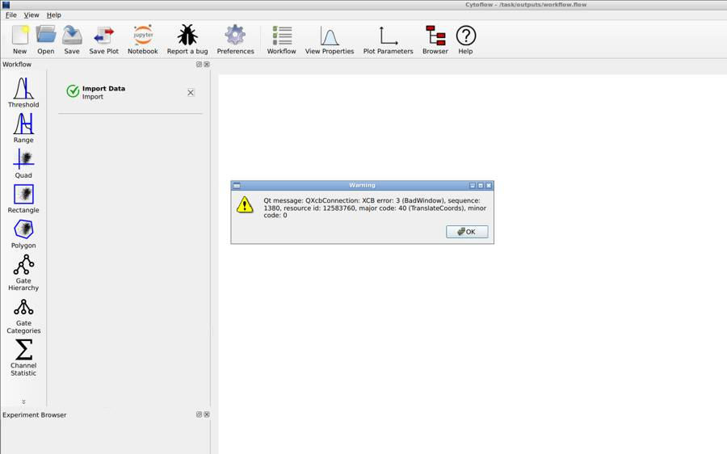
text(await tools.exec_command({cmd:"cu click 928 458 && cu click 233 182 && cu click 45 453 && cu screenshot /tmp/screen.png","max_output_tokens":1000}));
image((await tools.view_image({path:"/tmp/screen.png"})).image_url);
Script completed Wall time 0.4 seconds Output:
{"chunk_id":"4fee79","wall_time_seconds":0.201518013,"exit_code":0,"original_token_count":4,"output":"/tmp/screen.png\n"}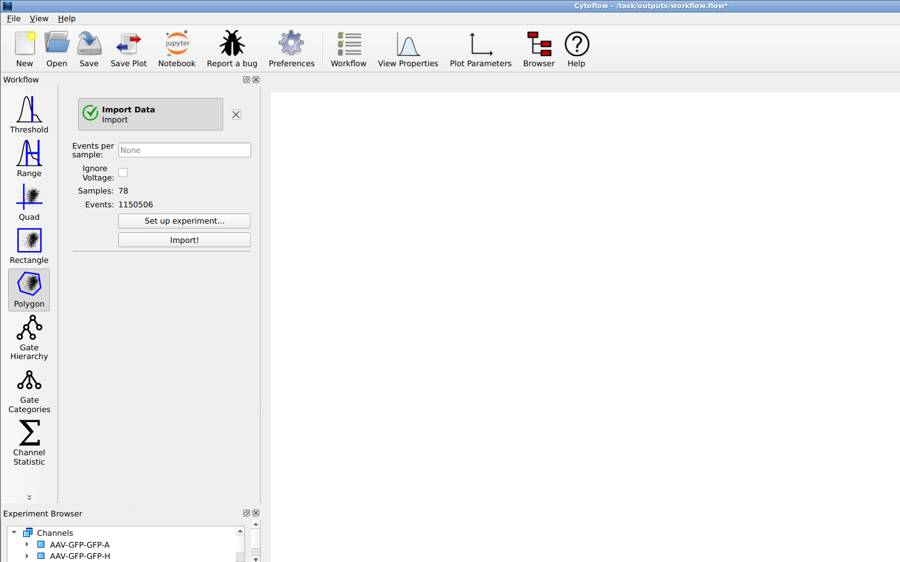
text(await tools.exec_command({cmd:"cu screenshot /tmp/screen.png","max_output_tokens":1000}));
image((await tools.view_image({path:"/tmp/screen.png"})).image_url);
Script completed Wall time 0.1 seconds Output:
{"chunk_id":"3b6509","wall_time_seconds":0.00000366,"exit_code":0,"original_token_count":4,"output":"/tmp/screen.png\n"}
text(await tools.exec_command({cmd:"cu click 271 323 && cu type 'cells_raw' && cu click 277 353 && cu screenshot /tmp/screen.png","max_output_tokens":1000}));
image((await tools.view_image({path:"/tmp/screen.png"})).image_url);
Script completed Wall time 0.5 seconds Output:
{"chunk_id":"4fe3d8","wall_time_seconds":0.328178173,"exit_code":0,"original_token_count":4,"output":"/tmp/screen.png\n"}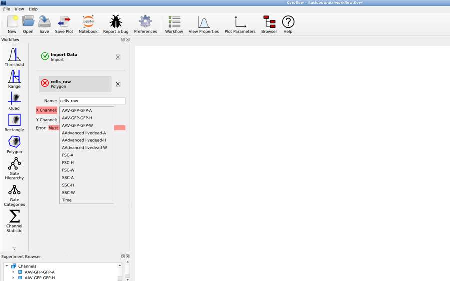
text(await tools.exec_command({cmd:"cu click 222 495 && cu click 276 385 && cu screenshot /tmp/screen.png","max_output_tokens":1000}));
image((await tools.view_image({path:"/tmp/screen.png"})).image_url);
Script completed Wall time 0.3 seconds Output:
{"chunk_id":"7e2e18","wall_time_seconds":0.097195073,"exit_code":0,"original_token_count":4,"output":"/tmp/screen.png\n"}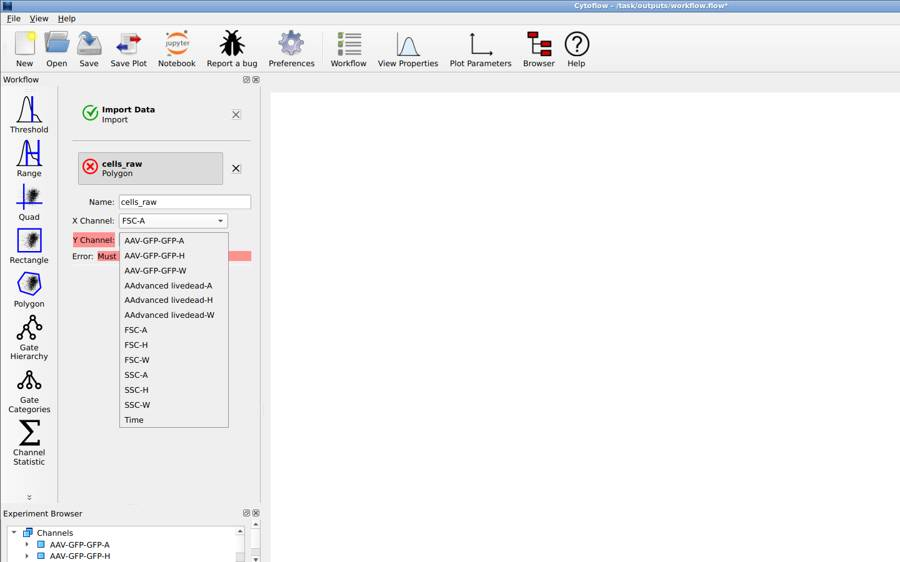
text(await tools.exec_command({cmd:"cu click 225 601 && cu click 652 70 && cu screenshot /tmp/screen.png","max_output_tokens":1000}));
image((await tools.view_image({path:"/tmp/screen.png"})).image_url);
Script completed Wall time 0.3 seconds Output:
{"chunk_id":"2ad87d","wall_time_seconds":0.099324032,"exit_code":0,"original_token_count":4,"output":"/tmp/screen.png\n"}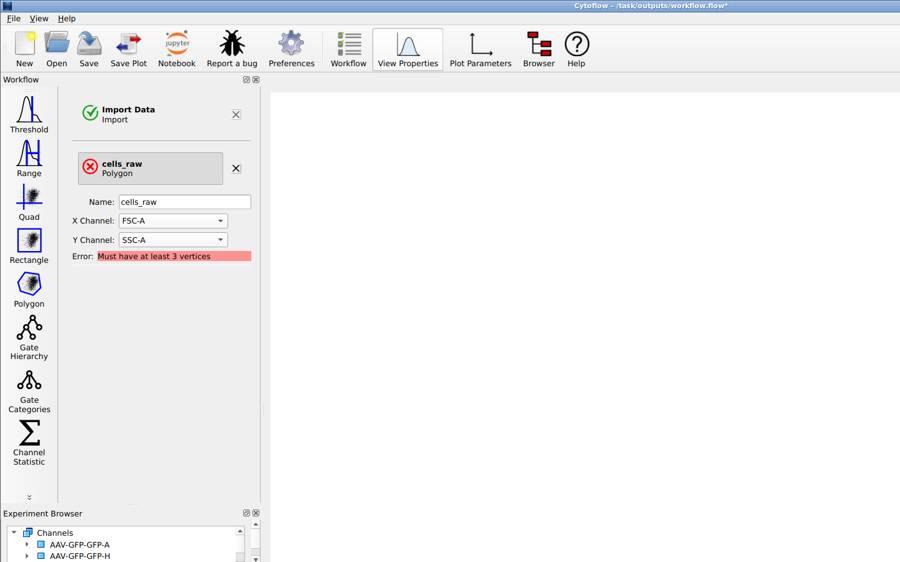
text(await tools.exec_command({cmd:"cu screenshot /tmp/screen.png","max_output_tokens":1000}));
image((await tools.view_image({path:"/tmp/screen.png"})).image_url);
Script completed Wall time 0.1 seconds Output:
{"chunk_id":"dc42a3","wall_time_seconds":0.00000362,"exit_code":0,"original_token_count":4,"output":"/tmp/screen.png\n"}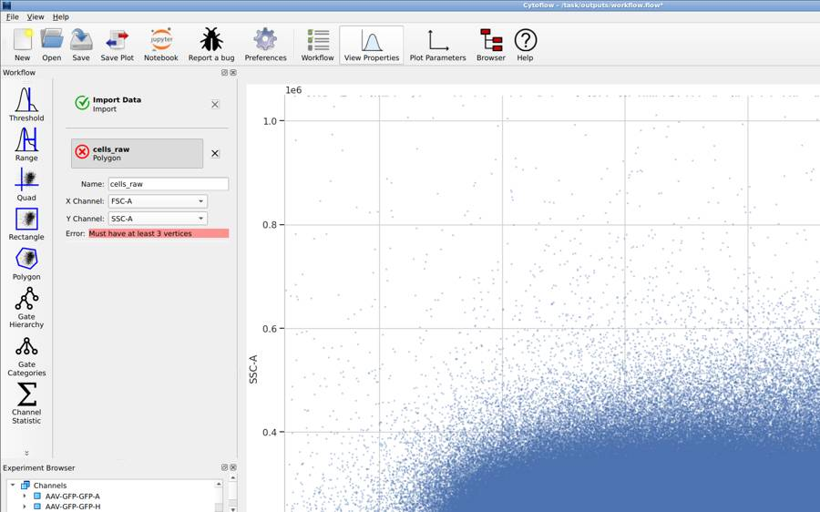
text(await tools.exec_command({cmd:"cu click 653 73 && cu screenshot /tmp/screen.png","max_output_tokens":1000}));
image((await tools.view_image({path:"/tmp/screen.png"})).image_url);
Script completed Wall time 0.2 seconds Output:
{"chunk_id":"9236ce","wall_time_seconds":0.015793834,"exit_code":0,"original_token_count":4,"output":"/tmp/screen.png\n"}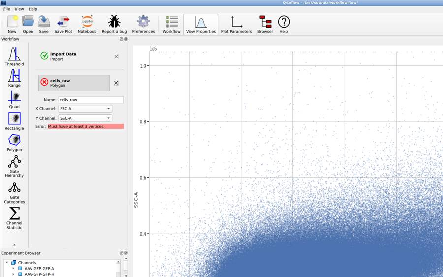
text(await tools.exec_command({cmd:"cu key alt+F10 && cu screenshot /tmp/screen.png","max_output_tokens":1000}));
image((await tools.view_image({path:"/tmp/screen.png"})).image_url);
Script completed Wall time 0.1 seconds Output:
{"chunk_id":"1abfcf","wall_time_seconds":0.000004,"exit_code":0,"original_token_count":4,"output":"/tmp/screen.png\n"}text(await tools.exec_command({cmd:"cu click 61 30 && cu screenshot /tmp/screen.png","max_output_tokens":1000}));
image((await tools.view_image({path:"/tmp/screen.png"})).image_url);
Script completed Wall time 0.2 seconds Output:
{"chunk_id":"e3b441","wall_time_seconds":0.015393594,"exit_code":0,"original_token_count":4,"output":"/tmp/screen.png\n"}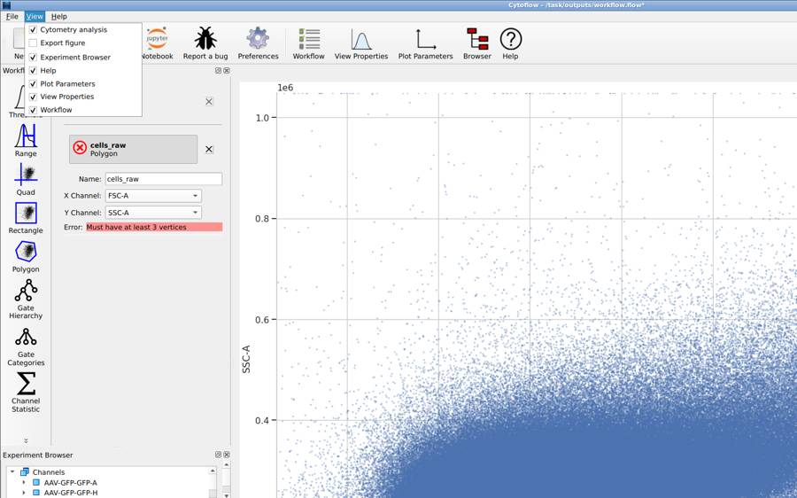
text(await tools.exec_command({cmd:"cu key Escape && cu click 708 10 right && cu screenshot /tmp/screen.png","max_output_tokens":1000}));
image((await tools.view_image({path:"/tmp/screen.png"})).image_url);
Script completed Wall time 0.2 seconds Output:
{"chunk_id":"67f11c","wall_time_seconds":0.031891318,"exit_code":0,"original_token_count":4,"output":"/tmp/screen.png\n"}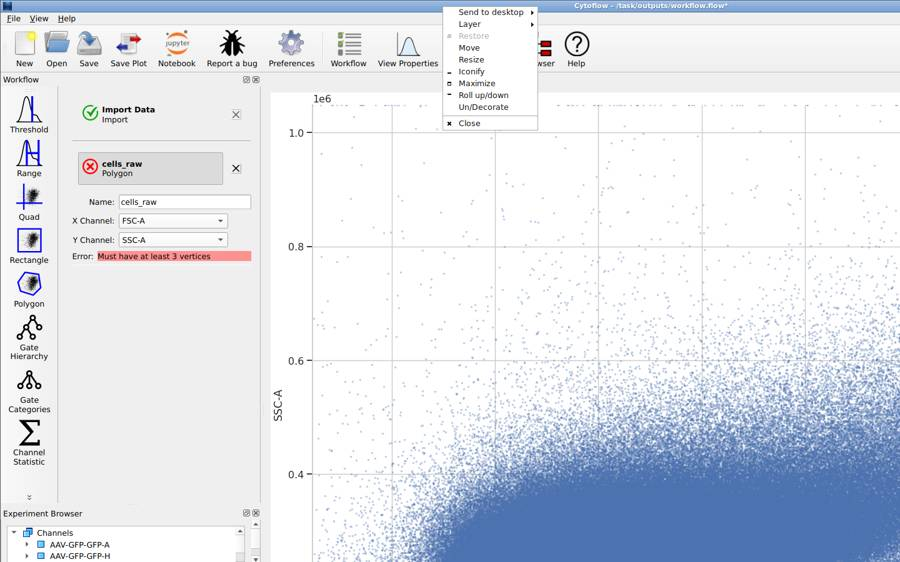
text(await tools.exec_command({cmd:"cu click 761 135 && cu screenshot /tmp/screen.png","max_output_tokens":1000}));
image((await tools.view_image({path:"/tmp/screen.png"})).image_url);
Script completed Wall time 0.2 seconds Output:
{"chunk_id":"20aa71","wall_time_seconds":0.015201774,"exit_code":0,"original_token_count":4,"output":"/tmp/screen.png\n"}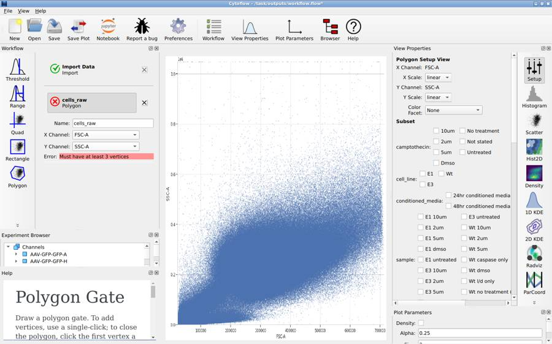
text(await tools.exec_command({cmd:"cu click 274 322 && cu key ctrl+a && cu type 'cells' && cu click 430 130 && cu click 516 808 && cu click 537 733 && cu click 565 602 && cu click 696 440 && cu click 991 325 && cu click 999 780 && cu click 697 830 && cu click 553 827 && cu click 516 808 && cu key ctrl+s && cu screenshot /tmp/screen.png","max_output_tokens":1000}));
image((await tools.view_image({path:"/tmp/screen.png"})).image_url);
Script completed Wall time 1.4 seconds Output:
{"chunk_id":"0302c9","wall_time_seconds":1.245345121,"exit_code":0,"original_token_count":4,"output":"/tmp/screen.png\n"}text(await tools.exec_command({cmd:"cu screenshot /tmp/screen.png","max_output_tokens":1000}));
image((await tools.view_image({path:"/tmp/screen.png"})).image_url);
Script completed Wall time 0.1 seconds Output:
{"chunk_id":"5bbe73","wall_time_seconds":0.00000449,"exit_code":0,"original_token_count":4,"output":"/tmp/screen.png\n"}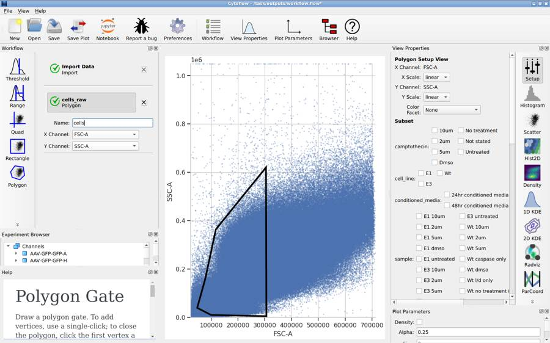
text(await tools.exec_command({cmd:"cu click 560 803 && cu click 553 718 && cu click 580 610 && cu click 690 419 && cu click 969 292 && cu click 973 788 && cu click 691 813 && cu click 588 819 && cu click 560 803 && cu screenshot /tmp/screen.png","max_output_tokens":1000}));
image((await tools.view_image({path:"/tmp/screen.png"})).image_url);
Script completed Wall time 1.0 seconds Output:
{"chunk_id":"926be4","wall_time_seconds":0.850036543,"exit_code":0,"original_token_count":4,"output":"/tmp/screen.png\n"}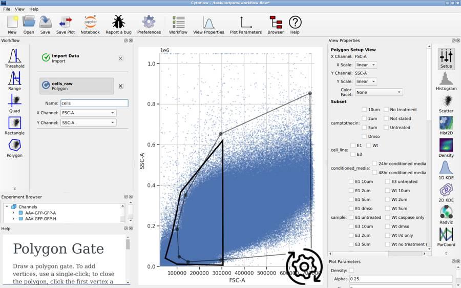
text(await tools.exec_command({cmd:"cu click 280 322 && cu key Tab && cu key ctrl+s && cu screenshot /tmp/screen.png","max_output_tokens":1000}));
image((await tools.view_image({path:"/tmp/screen.png"})).image_url);
Script completed Wall time 0.2 seconds Output:
{"chunk_id":"6f64c5","wall_time_seconds":0.054601909,"exit_code":0,"original_token_count":4,"output":"/tmp/screen.png\n"}text(await tools.exec_command({cmd:"cu click 46 454 && cu screenshot /tmp/screen.png","max_output_tokens":1000}));
image((await tools.view_image({path:"/tmp/screen.png"})).image_url);
Script completed Wall time 0.2 seconds Output:
{"chunk_id":"09ade3","wall_time_seconds":0.001360959,"exit_code":0,"original_token_count":4,"output":"/tmp/screen.png\n"}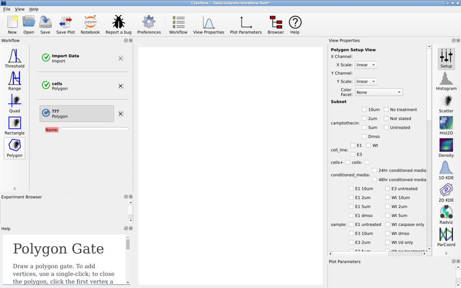
text(await tools.exec_command({cmd:"cu click 275 407 && cu type 'singlet_shape' && cu key Tab && cu screenshot /tmp/screen.png","max_output_tokens":1000}));
image((await tools.view_image({path:"/tmp/screen.png"})).image_url);
Script completed Wall time 0.5 seconds Output:
{"chunk_id":"9e9e13","wall_time_seconds":0.349215945,"exit_code":0,"original_token_count":4,"output":"/tmp/screen.png\n"}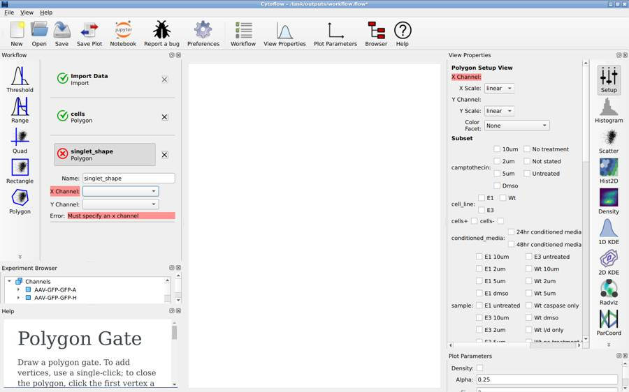
text(await tools.exec_command({cmd:"cu click 350 438 && cu key f && cu key Return && cu click 350 469 && cu key f && cu key Down && cu key Return && cu click 1086 507 && cu screenshot /tmp/screen.png","max_output_tokens":1000}));
image((await tools.view_image({path:"/tmp/screen.png"})).image_url);
Script completed Wall time 0.5 seconds Output:
{"chunk_id":"763f88","wall_time_seconds":0.291299968,"exit_code":0,"original_token_count":4,"output":"/tmp/screen.png\n"}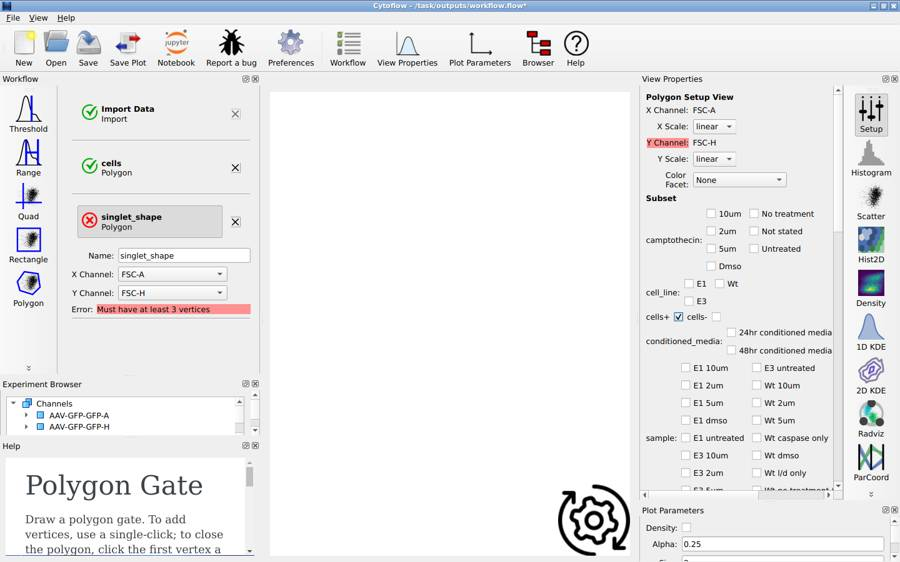
text(await tools.exec_command({cmd:"cu screenshot /tmp/screen.png","max_output_tokens":1000}));
image((await tools.view_image({path:"/tmp/screen.png"})).image_url);
Script completed Wall time 0.1 seconds Output:
{"chunk_id":"4db778","wall_time_seconds":0.00000354,"exit_code":0,"original_token_count":4,"output":"/tmp/screen.png\n"}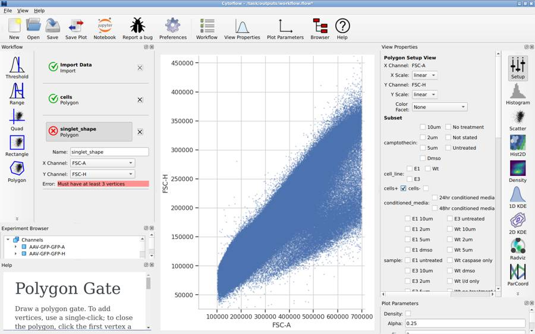
text(await tools.exec_command({cmd:"cu click 565 817 && cu click 714 646 && cu click 974 421 && cu click 974 216 && cu click 714 529 && cu click 565 740 && cu click 565 817 && cu screenshot /tmp/screen.png","max_output_tokens":1000}));
image((await tools.view_image({path:"/tmp/screen.png"})).image_url);
Script completed Wall time 0.8 seconds Output:
{"chunk_id":"2df68c","wall_time_seconds":0.640046884,"exit_code":0,"original_token_count":4,"output":"/tmp/screen.png\n"}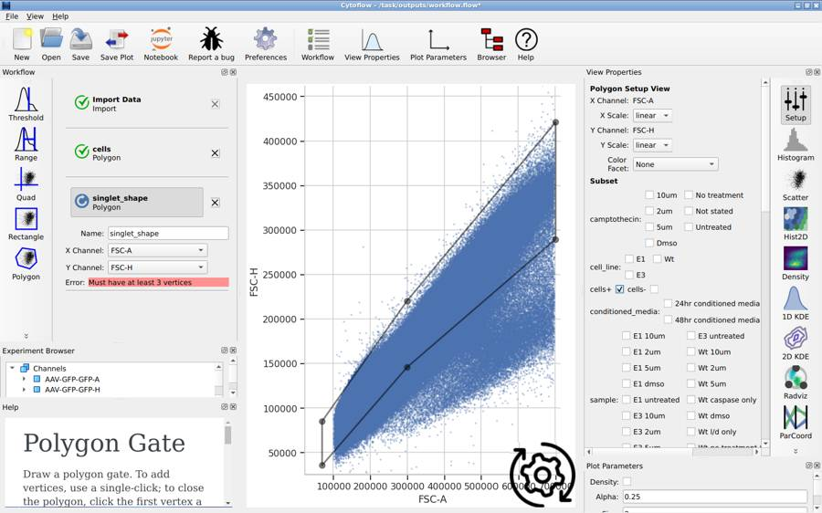
text(await tools.exec_command({cmd:"cu scroll 47 536 down 3 && cu screenshot /tmp/screen.png","max_output_tokens":1000}));
image((await tools.view_image({path:"/tmp/screen.png"})).image_url);
Script completed Wall time 0.4 seconds Output:
{"chunk_id":"eaa6e1","wall_time_seconds":0.209852749,"exit_code":0,"original_token_count":4,"output":"/tmp/screen.png\n"}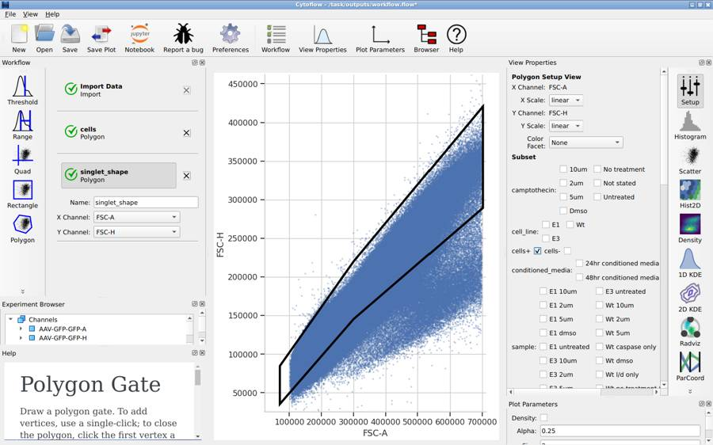
text(await tools.exec_command({cmd:"cu click 408 714 && cu click 408 614 && cu screenshot /tmp/screen.png","max_output_tokens":1000}));
image((await tools.view_image({path:"/tmp/screen.png"})).image_url);
Script completed Wall time 0.3 seconds Output:
{"chunk_id":"a449ab","wall_time_seconds":0.112657337,"exit_code":0,"original_token_count":4,"output":"/tmp/screen.png\n"}text(await tools.exec_command({cmd:"cu click 408 784 && cu click 46 530 && cu screenshot /tmp/screen.png","max_output_tokens":1000}));
image((await tools.view_image({path:"/tmp/screen.png"})).image_url);
Script completed Wall time 0.3 seconds Output:
{"chunk_id":"f1b567","wall_time_seconds":0.113127076,"exit_code":0,"original_token_count":4,"output":"/tmp/screen.png\n"}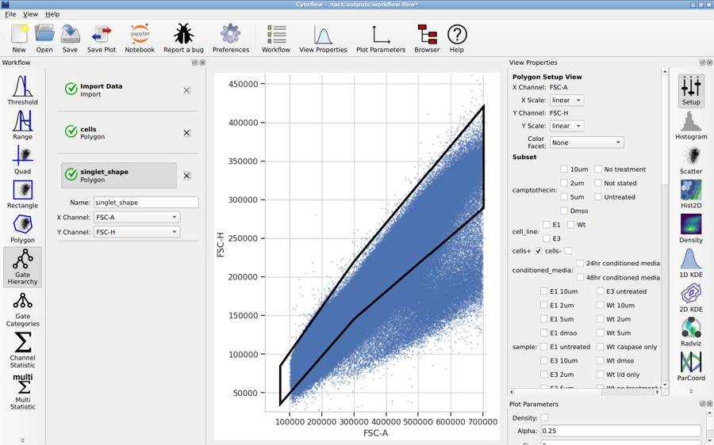
text(await tools.exec_command({cmd:"cu screenshot /tmp/screen.png","max_output_tokens":1000}));
image((await tools.view_image({path:"/tmp/screen.png"})).image_url);
Script completed Wall time 0.1 seconds Output:
{"chunk_id":"02abe2","wall_time_seconds":0.00000389,"exit_code":0,"original_token_count":4,"output":"/tmp/screen.png\n"}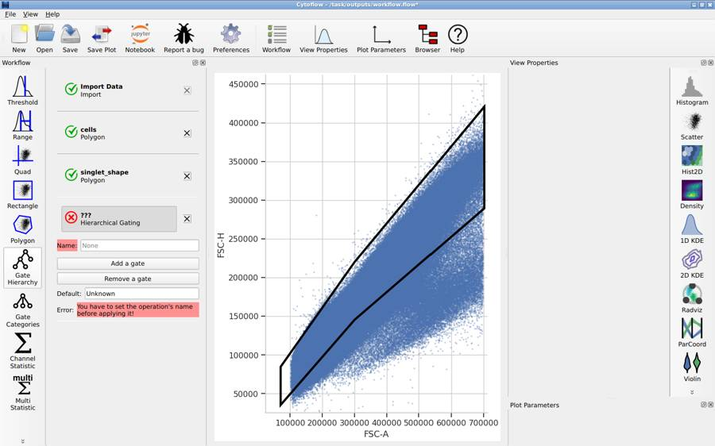
text(await tools.exec_command({cmd:"cu click 272 493 && cu type 'singlets' && cu key Tab && cu click 245 532 && cu screenshot /tmp/screen.png","max_output_tokens":1000}));
image((await tools.view_image({path:"/tmp/screen.png"})).image_url);
Script completed Wall time 0.5 seconds Output:
{"chunk_id":"84be9e","wall_time_seconds":0.328921154,"exit_code":0,"original_token_count":4,"output":"/tmp/screen.png\n"}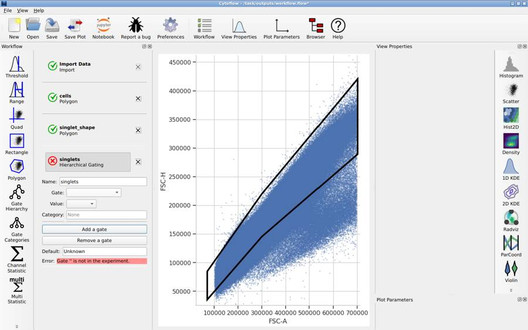
text(await tools.exec_command({cmd:"cu click 318 524 && cu screenshot /tmp/screen.png","max_output_tokens":1000}));
image((await tools.view_image({path:"/tmp/screen.png"})).image_url);
Script completed Wall time 0.2 seconds Output:
{"chunk_id":"873705","wall_time_seconds":0.005487018,"exit_code":0,"original_token_count":4,"output":"/tmp/screen.png\n"}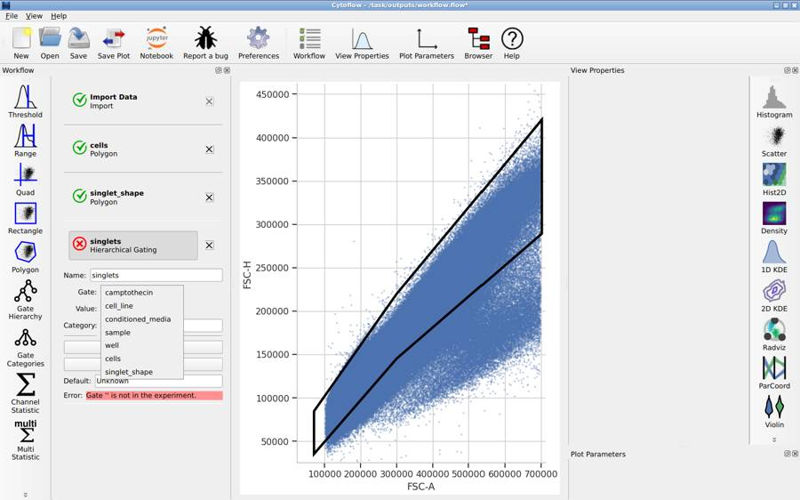
text(await tools.exec_command({cmd:"cu key Escape && cu click 922 70 && cu screenshot /tmp/screen.png","max_output_tokens":1000}));
image((await tools.view_image({path:"/tmp/screen.png"})).image_url);
Script completed Wall time 0.2 seconds Output:
{"chunk_id":"033fba","wall_time_seconds":0.021383542,"exit_code":0,"original_token_count":4,"output":"/tmp/screen.png\n"}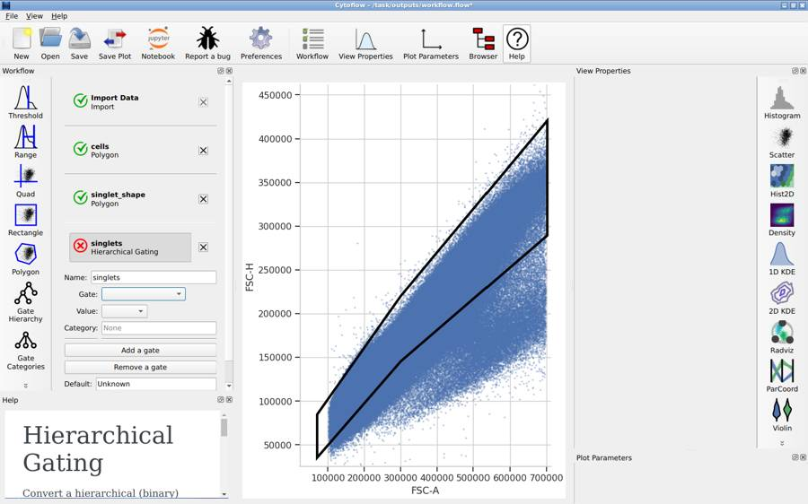
text(await tools.exec_command({cmd:"cu scroll 295 830 down 4 && cu screenshot /tmp/screen.png","max_output_tokens":1000}));
image((await tools.view_image({path:"/tmp/screen.png"})).image_url);
Script completed Wall time 0.5 seconds Output:
{"chunk_id":"611893","wall_time_seconds":0.305592143,"exit_code":0,"original_token_count":4,"output":"/tmp/screen.png\n"}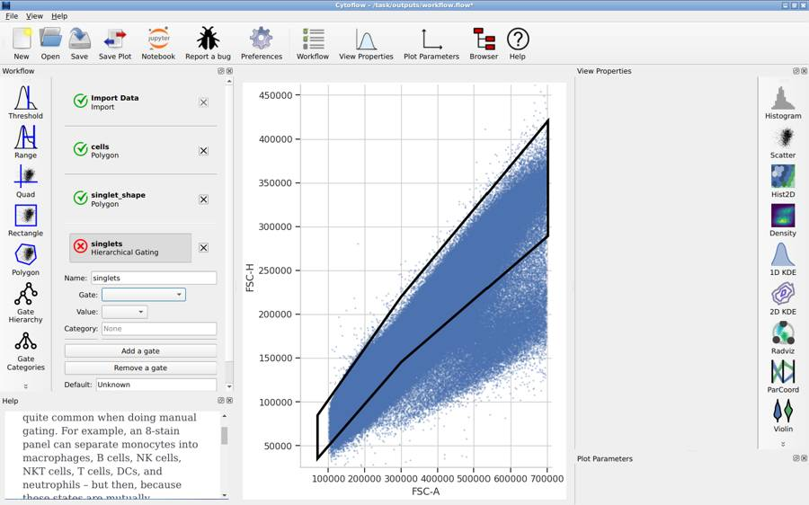
text(await tools.exec_command({cmd:"cu drag 244 705 244 326 && cu scroll 300 565 up 7 && cu screenshot /tmp/screen.png","max_output_tokens":1000}));
image((await tools.view_image({path:"/tmp/screen.png"})).image_url);
Script completed Wall time 0.8 seconds Output:
{"chunk_id":"dbf7dc","wall_time_seconds":0.612106654,"exit_code":0,"original_token_count":4,"output":"/tmp/screen.png\n"}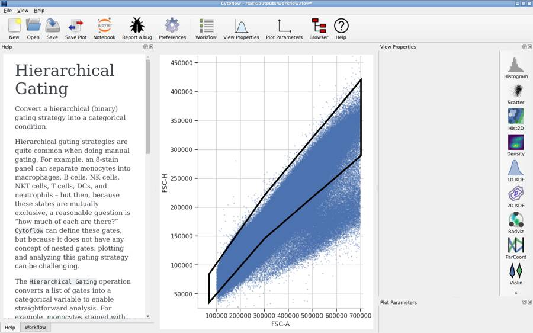
text(await tools.exec_command({cmd:"cu scroll 275 713 down 6 && cu screenshot /tmp/screen.png","max_output_tokens":1000}));
image((await tools.view_image({path:"/tmp/screen.png"})).image_url);
Script completed Wall time 0.7 seconds Output:
{"chunk_id":"a225b2","wall_time_seconds":0.509606034,"exit_code":0,"original_token_count":4,"output":"/tmp/screen.png\n"}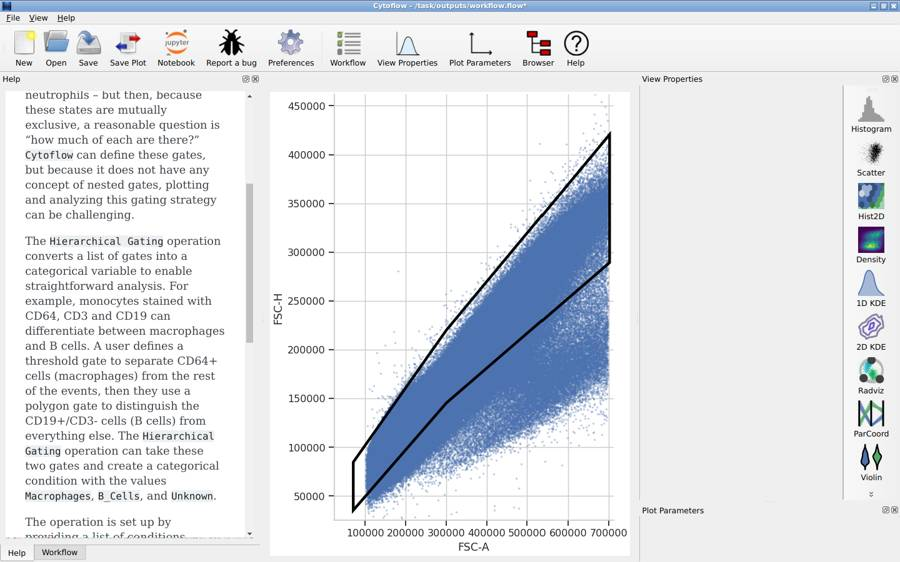
text(await tools.exec_command({cmd:"cu scroll 272 726 down 6 && cu screenshot /tmp/screen.png","max_output_tokens":1000}));
image((await tools.view_image({path:"/tmp/screen.png"})).image_url);
Script completed Wall time 0.7 seconds Output:
{"chunk_id":"8c3cd9","wall_time_seconds":0.507953395,"exit_code":0,"original_token_count":4,"output":"/tmp/screen.png\n"}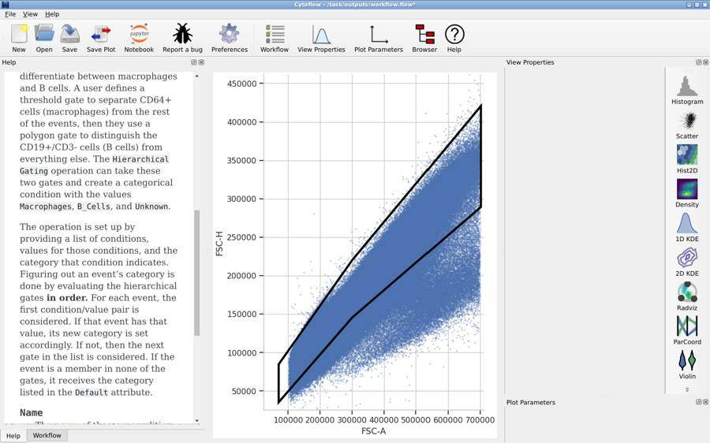
text(await tools.exec_command({cmd:"cu click 94 884 && cu click 318 524 && cu key c && cu key c && cu key c && cu key Return && cu screenshot /tmp/screen.png","max_output_tokens":1000}));
image((await tools.view_image({path:"/tmp/screen.png"})).image_url);
Script completed Wall time 0.3 seconds Output:
{"chunk_id":"02c3e2","wall_time_seconds":0.167430555,"exit_code":0,"original_token_count":4,"output":"/tmp/screen.png\n"}text(await tools.exec_command({cmd:"cu click 318 524 && cu key End && cu key Up && cu key Return && cu click 250 555 && cu screenshot /tmp/screen.png","max_output_tokens":1000}));
image((await tools.view_image({path:"/tmp/screen.png"})).image_url);
Script completed Wall time 0.3 seconds Output:
{"chunk_id":"6cca22","wall_time_seconds":0.153702491,"exit_code":0,"original_token_count":4,"output":"/tmp/screen.png\n"}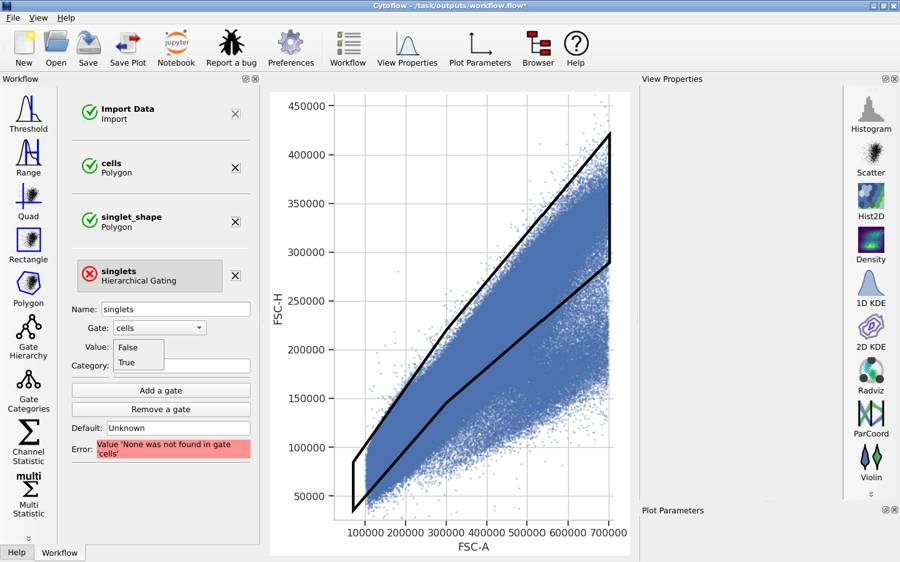
text(await tools.exec_command({cmd:"cu click 205 555 && cu click 258 585 && cu key ctrl+a && cu type 'fail' && cu key Tab && cu click 252 685 && cu key ctrl+a && cu type 'fail' && cu key Tab && cu click 254 625 && cu screenshot /tmp/screen.png","max_output_tokens":1000}));
image((await tools.view_image({path:"/tmp/screen.png"})).image_url);
Script completed Wall time 0.8 seconds Output:
{"chunk_id":"57e887","wall_time_seconds":0.616335973,"exit_code":0,"original_token_count":4,"output":"/tmp/screen.png\n"}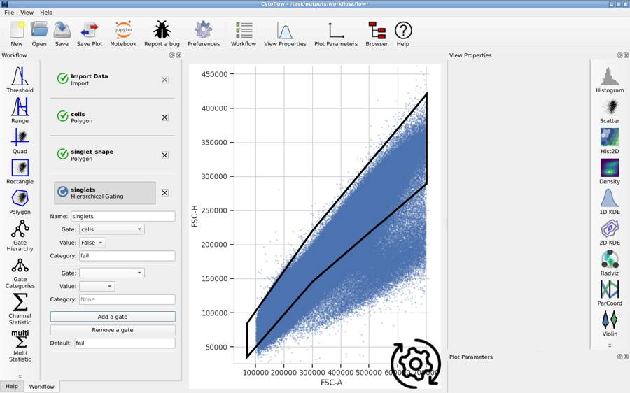
text(await tools.exec_command({cmd:"cu click 317 625 && cu key End && cu key Return && cu click 250 656 && cu key End && cu key Return && cu click 274 685 && cu key ctrl+a && cu type 'pass' && cu key Tab && cu key ctrl+s && cu screenshot /tmp/screen.png","max_output_tokens":1000}));
image((await tools.view_image({path:"/tmp/screen.png"})).image_url);
Script completed Wall time 0.6 seconds Output:
{"chunk_id":"b187cb","wall_time_seconds":0.455281345,"exit_code":0,"original_token_count":4,"output":"/tmp/screen.png\n"}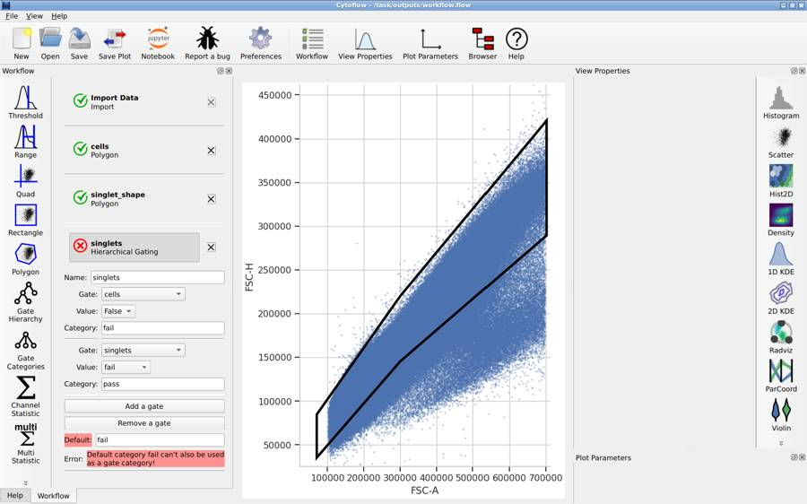
text(await tools.exec_command({cmd:"cu click 318 625 && cu key End && cu key Up && cu key Return && cu click 249 656 && cu key End && cu key Return && cu click 271 786 && cu key ctrl+a && cu type 'Unknown' && cu key Tab && cu screenshot /tmp/screen.png","max_output_tokens":1000}));
image((await tools.view_image({path:"/tmp/screen.png"})).image_url);
Script completed Wall time 0.7 seconds Output:
{"chunk_id":"9e7e1f","wall_time_seconds":0.516554932,"exit_code":0,"original_token_count":4,"output":"/tmp/screen.png\n"}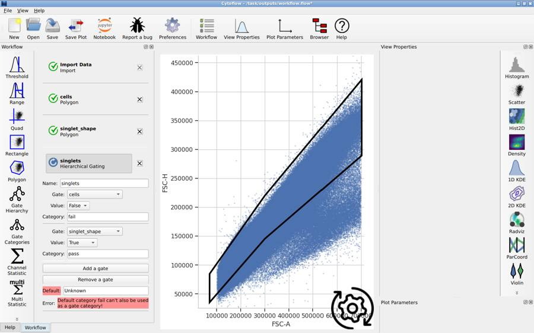
text(await tools.exec_command({cmd:"cu click 45 242 && cu screenshot /tmp/screen.png","max_output_tokens":1000}));
image((await tools.view_image({path:"/tmp/screen.png"})).image_url);
Script completed Wall time 0.2 seconds Output:
{"chunk_id":"3d7ef1","wall_time_seconds":0.006026418,"exit_code":0,"original_token_count":4,"output":"/tmp/screen.png\n"}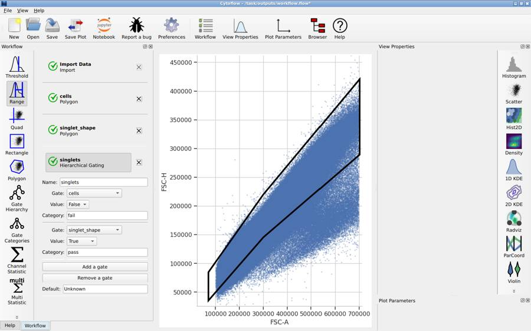
text(await tools.exec_command({cmd:"cu scroll 315 744 down 5 && cu screenshot /tmp/screen.png","max_output_tokens":1000}));
image((await tools.view_image({path:"/tmp/screen.png"})).image_url);
Script completed Wall time 0.6 seconds Output:
{"chunk_id":"c1f296","wall_time_seconds":0.402642015,"exit_code":0,"original_token_count":4,"output":"/tmp/screen.png\n"}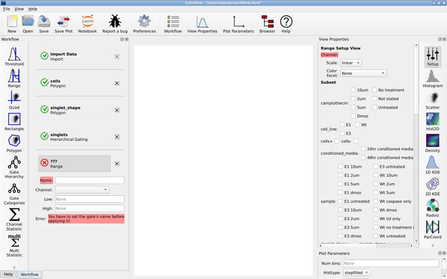
text(await tools.exec_command({cmd:"cu click 278 582 && cu type 'live' && cu key Tab && cu click 339 613 && cu key Home && cu key Down && cu key Down && cu key Down && cu key Return && cu click 1154 202 && cu key End && cu key Return && cu click 1211 733 && cu screenshot /tmp/screen.png","max_output_tokens":1000}));
image((await tools.view_image({path:"/tmp/screen.png"})).image_url);
Script completed Wall time 0.7 seconds Output:
{"chunk_id":"b216db","wall_time_seconds":0.533122035,"exit_code":0,"original_token_count":4,"output":"/tmp/screen.png\n"}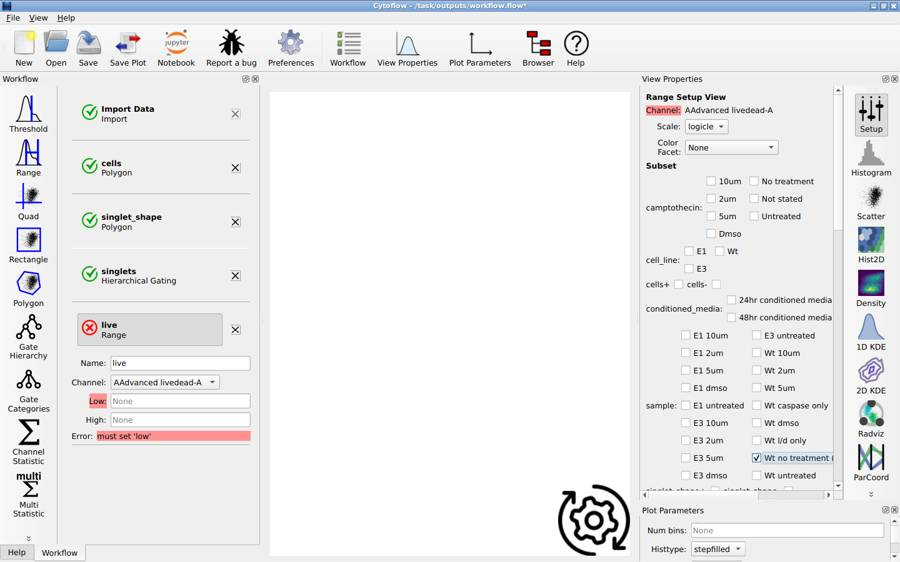
text(await tools.exec_command({cmd:"cu scroll 1278 711 down 5 && cu screenshot /tmp/screen.png","max_output_tokens":1000}));
image((await tools.view_image({path:"/tmp/screen.png"})).image_url);
Script completed Wall time 0.6 seconds Output:
{"chunk_id":"bfedfc","wall_time_seconds":0.403268605,"exit_code":0,"original_token_count":4,"output":"/tmp/screen.png\n"}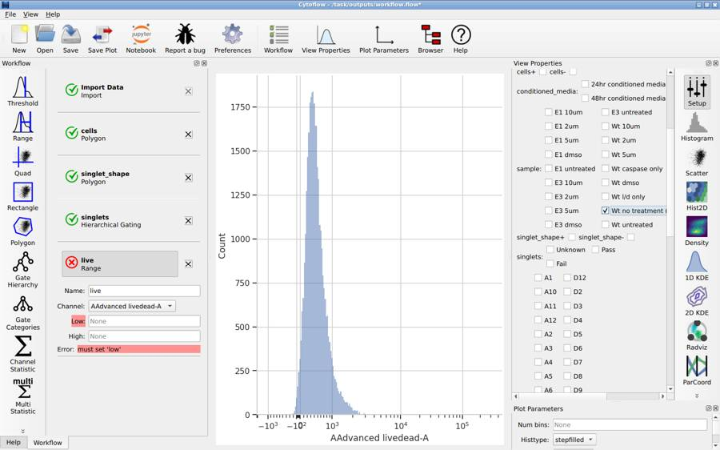
text(await tools.exec_command({cmd:"cu click 1190 500 && cu screenshot /tmp/screen.png","max_output_tokens":1000}));
image((await tools.view_image({path:"/tmp/screen.png"})).image_url);
Script completed Wall time 0.2 seconds Output:
{"chunk_id":"adc05b","wall_time_seconds":0.002240969,"exit_code":0,"original_token_count":4,"output":"/tmp/screen.png\n"}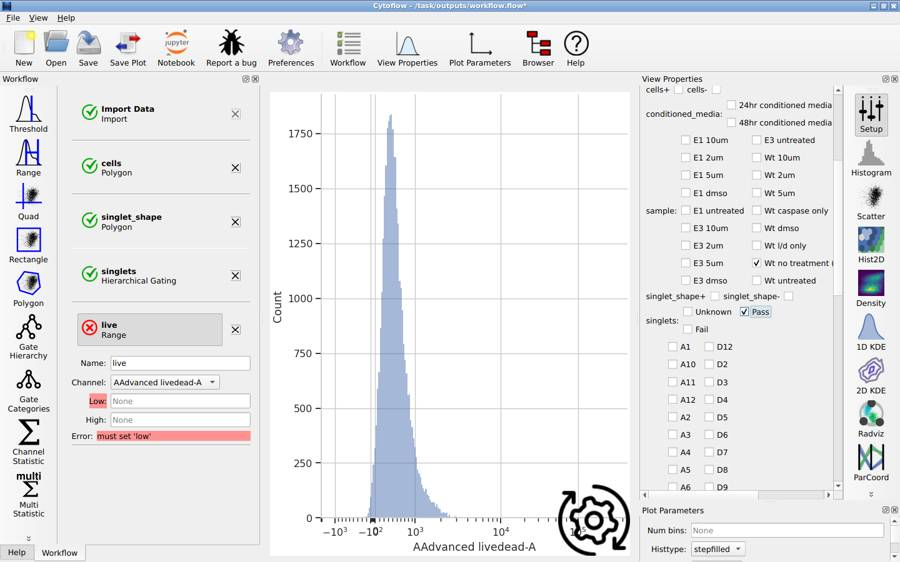
text(await tools.exec_command({cmd:"cu click 1210 393 && cu click 1210 337 && cu scroll 1271 310 up 9 && cu screenshot /tmp/screen.png","max_output_tokens":1000}));
image((await tools.view_image({path:"/tmp/screen.png"})).image_url);
Script completed Wall time 1.2 seconds Output:
{"chunk_id":"57b67e","wall_time_seconds":1.010462581,"exit_code":0,"original_token_count":4,"output":"/tmp/screen.png\n"}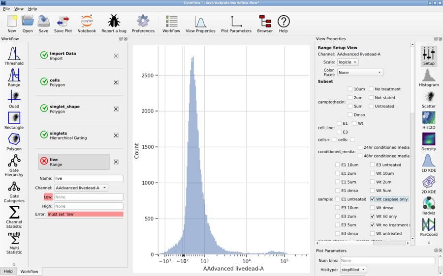
text(await tools.exec_command({cmd:"cu click 1234 235 && cu key s && cu key Return && cu screenshot /tmp/screen.png","max_output_tokens":1000}));
image((await tools.view_image({path:"/tmp/screen.png"})).image_url);
Script completed Wall time 0.2 seconds Output:
{"chunk_id":"dc693b","wall_time_seconds":0.031889387,"exit_code":0,"original_token_count":4,"output":"/tmp/screen.png\n"}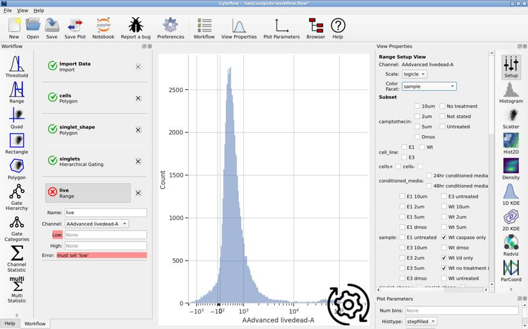
text(await tools.exec_command({cmd:"cu screenshot /tmp/screen.png","max_output_tokens":1000}));
image((await tools.view_image({path:"/tmp/screen.png"})).image_url);
Script completed Wall time 0.1 seconds Output:
{"chunk_id":"0b6d3d","wall_time_seconds":0.00001979,"exit_code":0,"original_token_count":4,"output":"/tmp/screen.png\n"}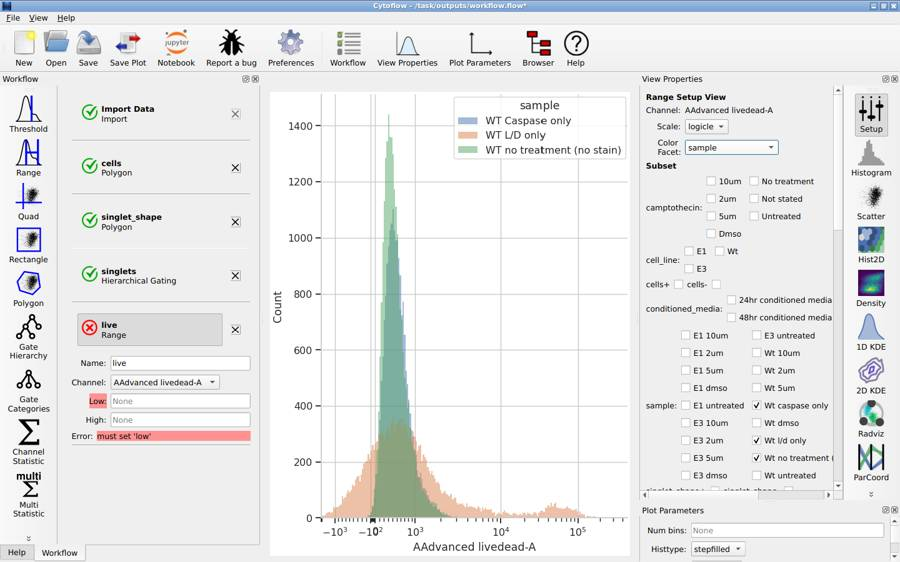
text(await tools.exec_command({cmd:"cu click 275 642 && cu type '-1000000' && cu key Tab && cu click 270 672 && cu type '10000' && cu key Tab && cu key ctrl+s && cu screenshot /tmp/screen.png","max_output_tokens":1000}));
image((await tools.view_image({path:"/tmp/screen.png"})).image_url);
Script completed Wall time 0.7 seconds Output:
{"chunk_id":"a9ab0a","wall_time_seconds":0.501470327,"exit_code":0,"original_token_count":4,"output":"/tmp/screen.png\n"}text(await tools.exec_command({cmd:"cu screenshot /task/outputs/gating_live_controls.png && cu click 45 173 && cu screenshot /tmp/screen.png","max_output_tokens":1000}));
image((await tools.view_image({path:"/tmp/screen.png"})).image_url);
Script completed Wall time 0.2 seconds Output:
{"chunk_id":"65023c","wall_time_seconds":0.049711501,"exit_code":0,"original_token_count":14,"output":"/task/outputs/gating_live_controls.png\n/tmp/screen.png\n"}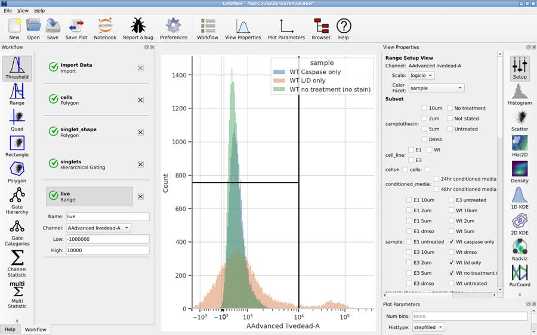
text(await tools.exec_command({cmd:"cu screenshot /tmp/screen.png","max_output_tokens":1000}));
image((await tools.view_image({path:"/tmp/screen.png"})).image_url);
Script completed Wall time 0.1 seconds Output:
{"chunk_id":"8bfd2b","wall_time_seconds":0.00000342,"exit_code":0,"original_token_count":4,"output":"/tmp/screen.png\n"}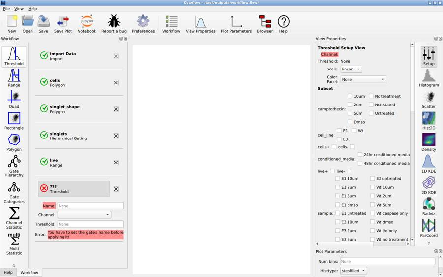
text(await tools.exec_command({cmd:"cu click 277 668 && cu key ctrl+a && cu type 'caspase_positive' && cu key Tab && cu click 350 697 && cu key Home && cu key Return && cu click 1165 225 && cu key End && cu key Return && cu click 1244 259 && cu key s && cu key Return && cu click 1210 693 && cu click 1210 748 && cu click 1210 776 && cu click 1080 555 && cu scroll 1276 704 down 5 && cu screenshot /tmp/screen.png","max_output_tokens":1000}));
image((await tools.view_image({path:"/tmp/screen.png"})).image_url);
Script completed Wall time 2.0 seconds Output:
{"chunk_id":"a4e434","wall_time_seconds":1.784858014,"exit_code":0,"original_token_count":4,"output":"/tmp/screen.png\n"}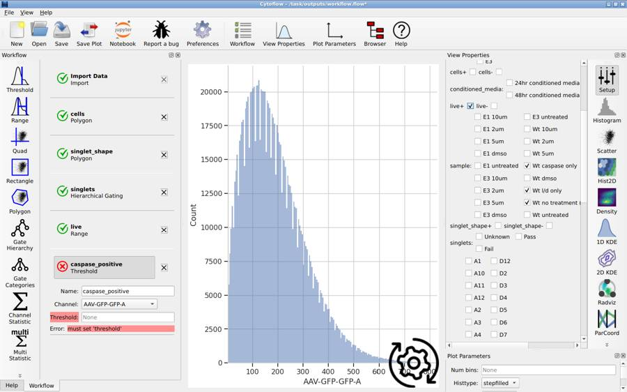
text(await tools.exec_command({cmd:"cu click 1190 542 && cu scroll 1291 326 up 9 && cu screenshot /tmp/screen.png","max_output_tokens":1000}));
image((await tools.view_image({path:"/tmp/screen.png"})).image_url);
Script completed Wall time 1.1 seconds Output:
{"chunk_id":"f7a908","wall_time_seconds":0.910602279,"exit_code":0,"original_token_count":4,"output":"/tmp/screen.png\n"}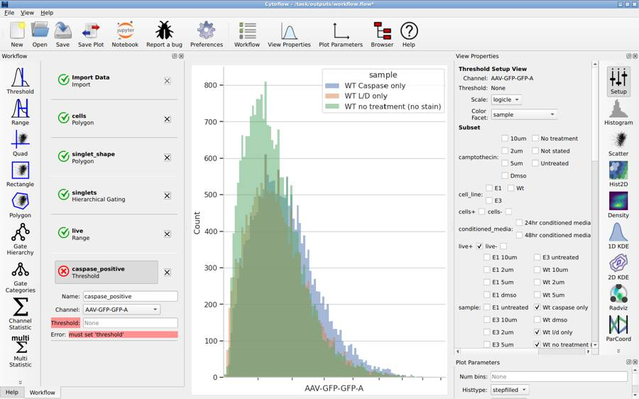
text(await tools.exec_command({cmd:"cu click 268 728 && cu type '1000' && cu key Tab && cu screenshot /task/outputs/gating_caspase_controls.png && cu click 1210 692 && cu click 1210 749 && cu click 1210 777 && cu click 1245 258 && cu key Home && cu key Down && cu key Return && cu screenshot /tmp/screen.png","max_output_tokens":1000}));
image((await tools.view_image({path:"/tmp/screen.png"})).image_url);
Script completed Wall time 0.8 seconds Output:
{"chunk_id":"022497","wall_time_seconds":0.635896925,"exit_code":0,"original_token_count":15,"output":"/task/outputs/gating_caspase_controls.png\n/tmp/screen.png\n"}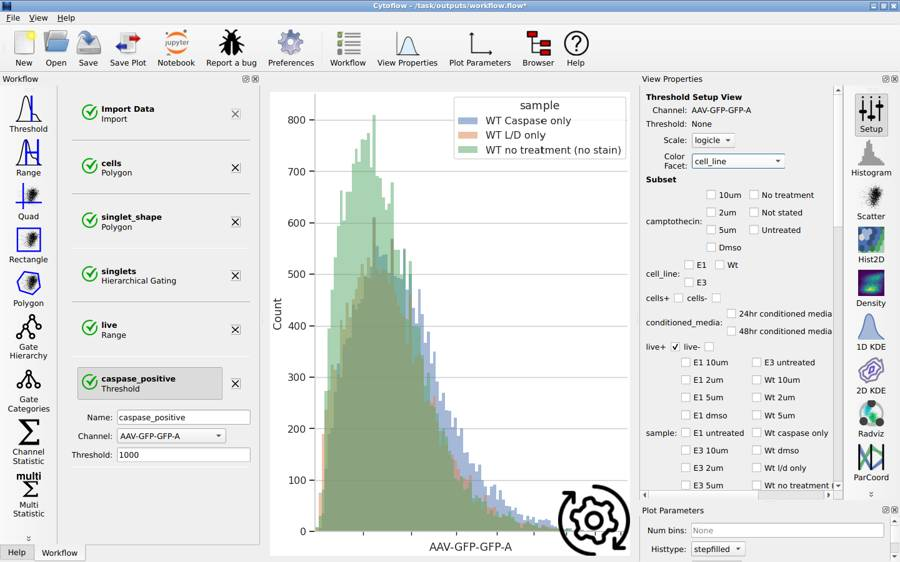
text(await tools.exec_command({cmd:"cu click 1244 258 && cu key Home && cu key Return && cu screenshot /tmp/screen.png","max_output_tokens":1000}));
image((await tools.view_image({path:"/tmp/screen.png"})).image_url);
Script completed Wall time 0.2 seconds Output:
{"chunk_id":"d48232","wall_time_seconds":0.033462697,"exit_code":0,"original_token_count":4,"output":"/tmp/screen.png\n"}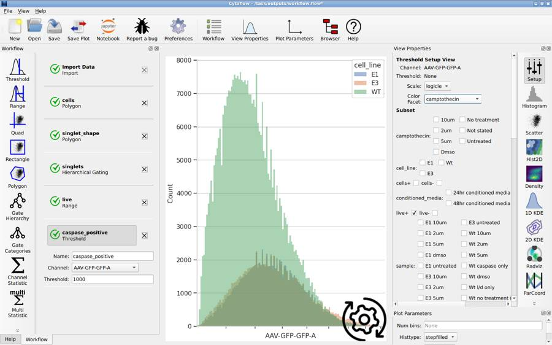
text(await tools.exec_command({cmd:"cu click 45 698 && cu screenshot /tmp/screen.png","max_output_tokens":1000}));
image((await tools.view_image({path:"/tmp/screen.png"})).image_url);
Script completed Wall time 0.2 seconds Output:
{"chunk_id":"cbf70d","wall_time_seconds":0.005241928,"exit_code":0,"original_token_count":4,"output":"/tmp/screen.png\n"}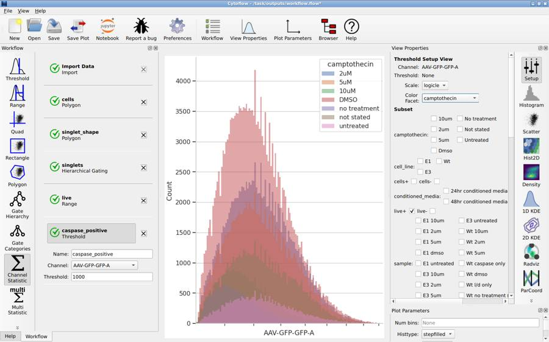
text(await tools.exec_command({cmd:"cu screenshot /tmp/screen.png","max_output_tokens":1000}));
image((await tools.view_image({path:"/tmp/screen.png"})).image_url);
Script completed Wall time 0.1 seconds Output:
{"chunk_id":"7105f1","wall_time_seconds":0.00000351,"exit_code":0,"original_token_count":4,"output":"/tmp/screen.png\n"}text(await tools.exec_command({cmd:"cu click 276 754 && cu key ctrl+a && cu type 'count_all' && cu key Tab && cu click 340 784 && cu key f && cu key Return && cu click 320 815 && cu screenshot /tmp/screen.png","max_output_tokens":1000}));
image((await tools.view_image({path:"/tmp/screen.png"})).image_url);
Script completed Wall time 0.7 seconds Output:
{"chunk_id":"a5cfe8","wall_time_seconds":0.511365683,"exit_code":0,"original_token_count":4,"output":"/tmp/screen.png\n"}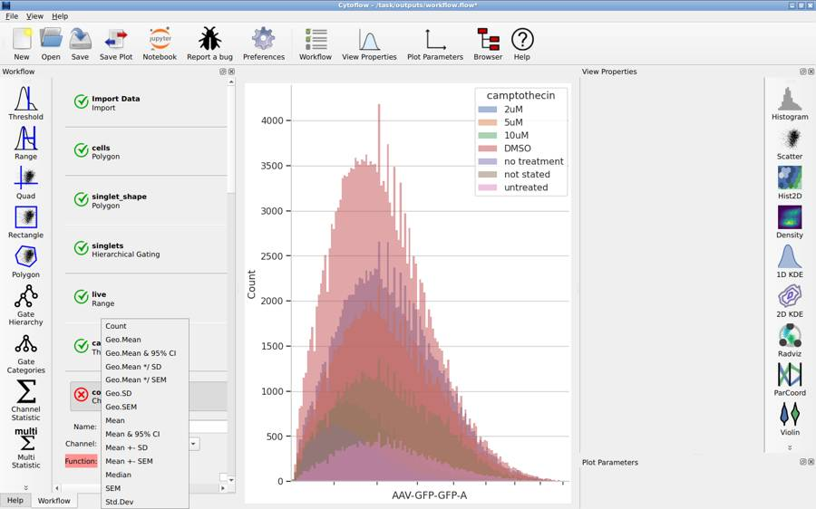
text(await tools.exec_command({cmd:"cu click 212 575 && cu scroll 308 757 down 6 && cu screenshot /tmp/screen.png","max_output_tokens":1000}));
image((await tools.view_image({path:"/tmp/screen.png"})).image_url);
Script completed Wall time 0.8 seconds Output:
{"chunk_id":"781a5d","wall_time_seconds":0.605900057,"exit_code":0,"original_token_count":4,"output":"/tmp/screen.png\n"}text(await tools.exec_command({cmd:"cu click 319 752 && cu key Home && cu key Return && cu scroll 309 754 down 7 && cu screenshot /tmp/screen.png","max_output_tokens":1000}));
image((await tools.view_image({path:"/tmp/screen.png"})).image_url);
Script completed Wall time 0.9 seconds Output:
{"chunk_id":"f29152","wall_time_seconds":0.734170017,"exit_code":0,"original_token_count":4,"output":"/tmp/screen.png\n"}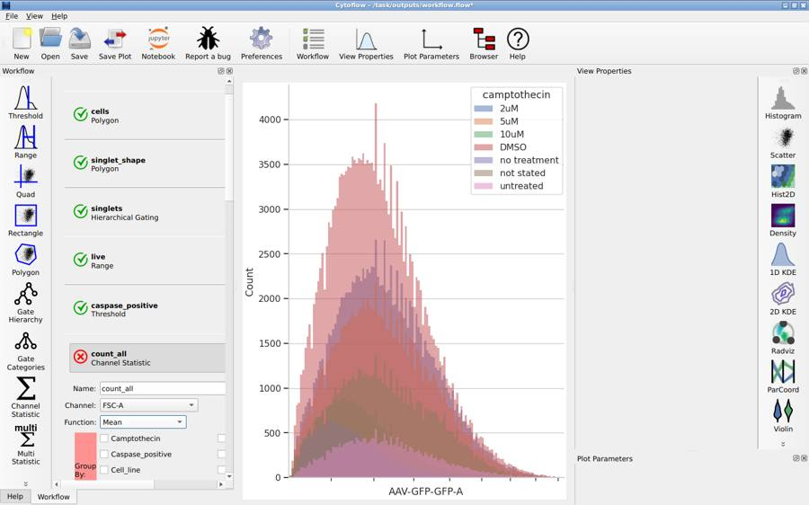
text(await tools.exec_command({cmd:"cu click 319 751 && cu key Home && cu key Return && cu click 154 693 && cu scroll 380 818 down 7 && cu screenshot /tmp/screen.png","max_output_tokens":1000}));
image((await tools.view_image({path:"/tmp/screen.png"})).image_url);
Script completed Wall time 1.0 seconds Output:
{"chunk_id":"6276dd","wall_time_seconds":0.835968319,"exit_code":0,"original_token_count":4,"output":"/tmp/screen.png\n"}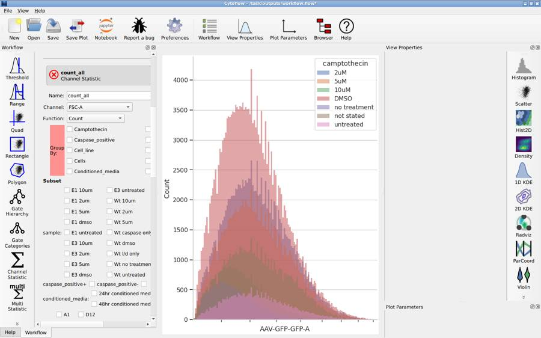
text(await tools.exec_command({cmd:"cu drag 422 464 603 464 && cu screenshot /tmp/screen.png","max_output_tokens":1000}));
image((await tools.view_image({path:"/tmp/screen.png"})).image_url);
Script completed Wall time 0.1 seconds Output:
{"chunk_id":"14e8ef","wall_time_seconds":0.00000401,"exit_code":0,"original_token_count":4,"output":"/tmp/screen.png\n"}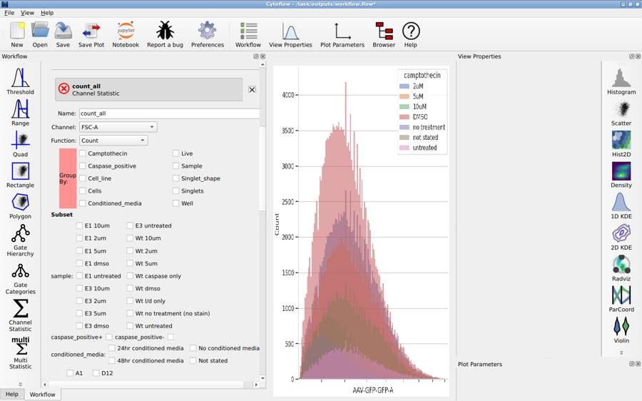
text(await tools.exec_command({cmd:"cu click 394 455 && cu click 1393 791 && cu click 1393 791 && cu click 1393 791 && cu screenshot /tmp/screen.png","max_output_tokens":1000}));
image((await tools.view_image({path:"/tmp/screen.png"})).image_url);
Script completed Wall time 0.5 seconds Output:
{"chunk_id":"e07ca5","wall_time_seconds":0.315837619,"exit_code":0,"original_token_count":4,"output":"/tmp/screen.png\n"}text(await tools.exec_command({cmd:"cu click 1393 792 && cu screenshot /tmp/screen.png","max_output_tokens":1000}));
image((await tools.view_image({path:"/tmp/screen.png"})).image_url);
Script completed Wall time 0.2 seconds Output:
{"chunk_id":"05afb4","wall_time_seconds":0.00217019,"exit_code":0,"original_token_count":4,"output":"/tmp/screen.png\n"}text(await tools.exec_command({cmd:"cu move 1394 791 && cu screenshot /tmp/screen.png","max_output_tokens":1000}));
image((await tools.view_image({path:"/tmp/screen.png"})).image_url);
Script completed Wall time 0.1 seconds Output:
{"chunk_id":"537718","wall_time_seconds":0.00000405,"exit_code":0,"original_token_count":4,"output":"/tmp/screen.png\n"}text(await tools.exec_command({cmd:"cu click 1394 791 && cu screenshot /tmp/screen.png","max_output_tokens":1000}));
image((await tools.view_image({path:"/tmp/screen.png"})).image_url);
Script completed Wall time 0.2 seconds Output:
{"chunk_id":"794b89","wall_time_seconds":0.00007843,"exit_code":0,"original_token_count":4,"output":"/tmp/screen.png\n"}text(await tools.exec_command({cmd:"cu click 1430 816 && cu screenshot /tmp/screen.png","max_output_tokens":1000}));
image((await tools.view_image({path:"/tmp/screen.png"})).image_url);
Script completed Wall time 0.2 seconds Output:
{"chunk_id":"32532f","wall_time_seconds":0.0006692,"exit_code":0,"original_token_count":4,"output":"/tmp/screen.png\n"}text(await tools.exec_command({cmd:"cu click 1394 890 && cu screenshot /tmp/screen.png","max_output_tokens":1000}));
image((await tools.view_image({path:"/tmp/screen.png"})).image_url);
Script completed Wall time 0.2 seconds Output:
{"chunk_id":"bb04a5","wall_time_seconds":0.001158879,"exit_code":0,"original_token_count":4,"output":"/tmp/screen.png\n"}text(await tools.exec_command({cmd:"cu drag 1390 143 876 420 && cu screenshot /tmp/screen.png","max_output_tokens":1000}));
image((await tools.view_image({path:"/tmp/screen.png"})).image_url);
Script completed Wall time 0.1 seconds Output:
{"chunk_id":"d24f9f","wall_time_seconds":0.00000415,"exit_code":0,"original_token_count":4,"output":"/tmp/screen.png\n"}text(await tools.exec_command({cmd:"cu click 1398 456 && cu screenshot /tmp/screen.png","max_output_tokens":1000}));
image((await tools.view_image({path:"/tmp/screen.png"})).image_url);
Script completed Wall time 0.2 seconds Output:
{"chunk_id":"51d970","wall_time_seconds":0.00007698,"exit_code":0,"original_token_count":4,"output":"/tmp/screen.png\n"}text(await tools.exec_command({cmd:"cu drag 772 457 14 145 && cu screenshot /tmp/screen.png","max_output_tokens":1000}));
image((await tools.view_image({path:"/tmp/screen.png"})).image_url);
Script completed Wall time 0.1 seconds Output:
{"chunk_id":"5e423e","wall_time_seconds":0.00000347,"exit_code":0,"original_token_count":4,"output":"/tmp/screen.png\n"}text(await tools.exec_command({cmd:"cu click 937 137 && cu drag 10 144 10 806 && cu screenshot /tmp/screen.png","max_output_tokens":1000}));
image((await tools.view_image({path:"/tmp/screen.png"})).image_url);
Script completed Wall time 0.2 seconds Output:
{"chunk_id":"f3f194","wall_time_seconds":0.032268477,"exit_code":0,"original_token_count":4,"output":"/tmp/screen.png\n"}text(await tools.exec_command({cmd:"cu click 1430 181 && cu screenshot /tmp/screen.png","max_output_tokens":1000}));
image((await tools.view_image({path:"/tmp/screen.png"})).image_url);
Script completed Wall time 0.2 seconds Output:
{"chunk_id":"183b45","wall_time_seconds":0.00000399,"exit_code":0,"original_token_count":4,"output":"/tmp/screen.png\n"}text(await tools.exec_command({cmd:"cu screenshot /tmp/screen.png","max_output_tokens":1000}));
image((await tools.view_image({path:"/tmp/screen.png"})).image_url);
Script completed Wall time 0.1 seconds Output:
{"chunk_id":"508697","wall_time_seconds":0.00000411,"exit_code":0,"original_token_count":4,"output":"/tmp/screen.png\n"}text(await tools.exec_command({cmd:"cu click 1242 323 && cu screenshot /tmp/screen.png","max_output_tokens":1000}));
image((await tools.view_image({path:"/tmp/screen.png"})).image_url);
Script completed Wall time 0.2 seconds Output:
{"chunk_id":"0c9152","wall_time_seconds":0.00000572,"exit_code":0,"original_token_count":4,"output":"/tmp/screen.png\n"}text(await tools.exec_command({cmd:"cu click 1430 180 && cu screenshot /tmp/screen.png","max_output_tokens":1000}));
image((await tools.view_image({path:"/tmp/screen.png"})).image_url);
Script completed Wall time 0.2 seconds Output:
{"chunk_id":"a074a1","wall_time_seconds":0.00000468,"exit_code":0,"original_token_count":4,"output":"/tmp/screen.png\n"}text(await tools.exec_command({cmd:"cu screenshot /tmp/screen.png","max_output_tokens":1000}));
image((await tools.view_image({path:"/tmp/screen.png"})).image_url);
Script completed Wall time 0.1 seconds Output:
{"chunk_id":"df5031","wall_time_seconds":0.00000438,"exit_code":0,"original_token_count":4,"output":"/tmp/screen.png\n"}text(await tools.exec_command({cmd:"cu click 1199 272 && cu key Home && cu key Return && cu click 1184 302 && cu key Home && cu key Return && cu click 1165 333 && cu key Home && cu key Return && cu screenshot /tmp/screen.png","max_output_tokens":1000}));
image((await tools.view_image({path:"/tmp/screen.png"})).image_url);
Script completed Wall time 0.5 seconds Output:
{"chunk_id":"8e3508","wall_time_seconds":0.298986635,"exit_code":0,"original_token_count":4,"output":"/tmp/screen.png\n"}text(await tools.exec_command({cmd:"cu click 1198 273 && cu screenshot /tmp/screen.png","max_output_tokens":1000}));
image((await tools.view_image({path:"/tmp/screen.png"})).image_url);
Script completed Wall time 0.2 seconds Output:
{"chunk_id":"f78860","wall_time_seconds":0.00115125,"exit_code":0,"original_token_count":4,"output":"/tmp/screen.png\n"}text(await tools.exec_command({cmd:"cu click 1156 297 && cu click 1184 302 && cu key Home && cu key Return && cu click 1251 333 && cu key w && cu key Return && cu screenshot /tmp/screen.png","max_output_tokens":1000}));
image((await tools.view_image({path:"/tmp/screen.png"})).image_url);
Script completed Wall time 0.4 seconds Output:
{"chunk_id":"f6b739","wall_time_seconds":0.266077717,"exit_code":0,"original_token_count":4,"output":"/tmp/screen.png\n"}text(await tools.exec_command({cmd:"cu click 1165 333 && cu key Home && cu key Return && cu screenshot /tmp/screen.png","max_output_tokens":1000}));
image((await tools.view_image({path:"/tmp/screen.png"})).image_url);
Script completed Wall time 0.2 seconds Output:
{"chunk_id":"0c5f53","wall_time_seconds":0.031287188,"exit_code":0,"original_token_count":4,"output":"/tmp/screen.png\n"}text(await tools.exec_command({cmd:"cu click 1240 483 && cu screenshot /tmp/screen.png","max_output_tokens":1000}));
image((await tools.view_image({path:"/tmp/screen.png"})).image_url);
Script completed Wall time 0.2 seconds Output:
{"chunk_id":"34545f","wall_time_seconds":0.004724028,"exit_code":0,"original_token_count":4,"output":"/tmp/screen.png\n"}text(await tools.exec_command({cmd:"cu paste '/task/outputs/export_all.csv' && cu click 982 568 && cu screenshot /tmp/screen.png","max_output_tokens":1000}));
image((await tools.view_image({path:"/tmp/screen.png"})).image_url);
Script completed Wall time 1.5 seconds Output:
{"chunk_id":"bb57b4","wall_time_seconds":1.330588658,"exit_code":0,"original_token_count":4,"output":"/tmp/screen.png\n"}text(await tools.exec_command({cmd:"head -12 /task/outputs/export_all.csv && tail -8 /task/outputs/export_all.csv","max_output_tokens":2000}));
Script completed
Wall time 0.0 seconds
Output:
{"chunk_id":"1c9eeb","wall_time_seconds":0.00000357,"exit_code":0,"original_token_count":91,"output":"well = A1,30920.0\nwell = A10,24604.0\nwell = A11,38346.0\nwell = A12,31708.0\nwell = A2,31266.0\nwell = A3,38748.0\nwell = A4,34861.0\nwell = A5,14011.0\nwell = A6,25118.0\nwell = A7,27544.0\nwell = A8,30067.0\nwell = A9,17224.0\nwell = F8,10605.0\nwell = F9,3608.0\nwell = G1,34073.0\nwell = G2,28006.0\nwell = G3,27095.0\nwell = G4,7482.0\nwell = G5,11594.0\nwell = G6,16054.0\n"}text(await tools.exec_command({cmd:"cu click 300 198 right && cu screenshot /tmp/screen.png","max_output_tokens":1000}));
image((await tools.view_image({path:"/tmp/screen.png"})).image_url);
Script completed Wall time 0.2 seconds Output:
{"chunk_id":"c400df","wall_time_seconds":0.001847219,"exit_code":0,"original_token_count":4,"output":"/tmp/screen.png\n"}text(await tools.exec_command({cmd:"cu click 45 695 && cu screenshot /tmp/screen.png","max_output_tokens":1000}));
image((await tools.view_image({path:"/tmp/screen.png"})).image_url);
Script completed Wall time 0.2 seconds Output:
{"chunk_id":"0ff482","wall_time_seconds":0.00125875,"exit_code":0,"original_token_count":4,"output":"/tmp/screen.png\n"}text(await tools.exec_command({cmd:"cu scroll 544 816 down 18 && cu screenshot /tmp/screen.png","max_output_tokens":1000}));
image((await tools.view_image({path:"/tmp/screen.png"})).image_url);
Script completed Wall time 1.9 seconds Output:
{"chunk_id":"790777","wall_time_seconds":1.698290257,"exit_code":0,"original_token_count":4,"output":"/tmp/screen.png\n"}text(await tools.exec_command({cmd:"cu scroll 546 810 down 18 && cu screenshot /tmp/screen.png","max_output_tokens":1000}));
image((await tools.view_image({path:"/tmp/screen.png"})).image_url);
Script completed Wall time 1.9 seconds Output:
{"chunk_id":"14a67d","wall_time_seconds":1.698184167,"exit_code":0,"original_token_count":4,"output":"/tmp/screen.png\n"}text(await tools.exec_command({cmd:"cu scroll 548 400 up 25 && cu screenshot /tmp/screen.png","max_output_tokens":1000}));
image((await tools.view_image({path:"/tmp/screen.png"})).image_url);
Script completed Wall time 2.6 seconds Output:
{"chunk_id":"24af2a","wall_time_seconds":2.399498137,"exit_code":0,"original_token_count":4,"output":"/tmp/screen.png\n"}text(await tools.exec_command({cmd:"cu click 307 424 && cu key ctrl+a && cu type 'count_cells' && cu key Tab && cu click 340 454 && cu key f && cu key Return && cu click 320 486 && cu key Home && cu key Return && cu click 184 598 && cu click 394 625 && cu click 1430 182 && cu screenshot /tmp/screen.png","max_output_tokens":1000}));
image((await tools.view_image({path:"/tmp/screen.png"})).image_url);
Script completed Wall time 1.1 seconds Output:
{"chunk_id":"57d3df","wall_time_seconds":0.900890654,"exit_code":0,"original_token_count":4,"output":"/tmp/screen.png\n"}text(await tools.exec_command({cmd:"cu screenshot /tmp/screen.png","max_output_tokens":1000}));
image((await tools.view_image({path:"/tmp/screen.png"})).image_url);
Script completed Wall time 0.1 seconds Output:
{"chunk_id":"e976a2","wall_time_seconds":0.0000036,"exit_code":0,"original_token_count":4,"output":"/tmp/screen.png\n"}text(await tools.exec_command({cmd:"cu click 1243 321 && cu click 1430 182 && cu screenshot /tmp/screen.png","max_output_tokens":1000}));
image((await tools.view_image({path:"/tmp/screen.png"})).image_url);
Script completed Wall time 0.3 seconds Output:
{"chunk_id":"a733c6","wall_time_seconds":0.1024301,"exit_code":0,"original_token_count":4,"output":"/tmp/screen.png\n"}text(await tools.exec_command({cmd:"cu click 1198 273 && cu key End && cu key Return && cu screenshot /tmp/screen.png","max_output_tokens":1000}));
image((await tools.view_image({path:"/tmp/screen.png"})).image_url);
Script completed Wall time 0.2 seconds Output:
{"chunk_id":"18e7ed","wall_time_seconds":0.02584485,"exit_code":0,"original_token_count":4,"output":"/tmp/screen.png\n"}text(await tools.exec_command({cmd:"cu click 1184 302 && cu key Home && cu key Return && cu screenshot /tmp/screen.png","max_output_tokens":1000}));
image((await tools.view_image({path:"/tmp/screen.png"})).image_url);
Script completed Wall time 0.2 seconds Output:
{"chunk_id":"a78839","wall_time_seconds":0.030234928,"exit_code":0,"original_token_count":4,"output":"/tmp/screen.png\n"}text(await tools.exec_command({cmd:"cu click 1165 333 && cu key w && cu key Return && cu click 1165 393 && cu key c && cu key Return && cu screenshot /tmp/screen.png","max_output_tokens":1000}));
image((await tools.view_image({path:"/tmp/screen.png"})).image_url);
Script completed Wall time 0.3 seconds Output:
{"chunk_id":"f1b55c","wall_time_seconds":0.165920626,"exit_code":0,"original_token_count":4,"output":"/tmp/screen.png\n"}text(await tools.exec_command({cmd:"cu click 1164 393 && cu screenshot /tmp/screen.png","max_output_tokens":1000}));
image((await tools.view_image({path:"/tmp/screen.png"})).image_url);
Script completed Wall time 0.2 seconds Output:
{"chunk_id":"e0a50d","wall_time_seconds":0.00000452,"exit_code":0,"original_token_count":4,"output":"/tmp/screen.png\n"}text(await tools.exec_command({cmd:"cu click 1137 391 && cu screenshot /tmp/screen.png","max_output_tokens":1000}));
image((await tools.view_image({path:"/tmp/screen.png"})).image_url);
Script completed Wall time 0.2 seconds Output:
{"chunk_id":"e6dc7a","wall_time_seconds":0.00000387,"exit_code":0,"original_token_count":4,"output":"/tmp/screen.png\n"}text(await tools.exec_command({cmd:"cu click 1242 484 && cu screenshot /tmp/screen.png","max_output_tokens":1000}));
image((await tools.view_image({path:"/tmp/screen.png"})).image_url);
Script completed Wall time 0.2 seconds Output:
{"chunk_id":"faab13","wall_time_seconds":0.00201471,"exit_code":0,"original_token_count":4,"output":"/tmp/screen.png\n"}text(await tools.exec_command({cmd:"cu paste '/task/outputs/export_cells.csv' && cu click 980 568 && cu key ctrl+s && cu click 45 694 && cu screenshot /tmp/screen.png","max_output_tokens":1000}));
image((await tools.view_image({path:"/tmp/screen.png"})).image_url);
text(await tools.exec_command({cmd:"head -5 /task/outputs/export_cells.csv","max_output_tokens":1000}));
Script completed Wall time 1.7 seconds Output:
{"chunk_id":"e5867b","wall_time_seconds":1.460795938,"exit_code":0,"original_token_count":4,"output":"/tmp/screen.png\n"}{"chunk_id":"947952","wall_time_seconds":0.00000412,"exit_code":0,"original_token_count":34,"output":"None,cells = False,cells = True\nwell = A1,9389.0,21531.0\nwell = A10,6974.0,17630.0\nwell = A11,12782.0,25564.0\nwell = A12,2156.0,29552.0\n"}text(await tools.exec_command({cmd:"cu screenshot /tmp/screen.png","max_output_tokens":1000}));
image((await tools.view_image({path:"/tmp/screen.png"})).image_url);
Script completed Wall time 0.1 seconds Output:
{"chunk_id":"8476f0","wall_time_seconds":0.00000414,"exit_code":0,"original_token_count":4,"output":"/tmp/screen.png\n"}text(await tools.exec_command({cmd:"cu click 305 512 && cu key ctrl+a && cu type 'count_populations' && cu key Tab && cu click 339 542 && cu key f && cu key Return && cu click 319 573 && cu key Home && cu key Return && cu click 394 600 && cu click 184 628 && cu click 394 683 && cu click 394 712 && cu click 1430 182 && cu screenshot /tmp/screen.png","max_output_tokens":1000}));
image((await tools.view_image({path:"/tmp/screen.png"})).image_url);
Script completed Wall time 1.4 seconds Output:
{"chunk_id":"17f4e8","wall_time_seconds":1.265082233,"exit_code":0,"original_token_count":4,"output":"/tmp/screen.png\n"}text(await tools.exec_command({cmd:"cu click 1243 322 && cu click 1430 182 && sleep 1 && cu click 1199 272 && cu key End && cu key Return && sleep 1 && cu click 1183 302 && cu key Home && cu key Return && sleep 1 && cu click 1165 333 && cu key w && cu key Return && sleep 1 && cu click 1165 363 && cu key s && cu key Return && sleep 1 && cu click 1165 393 && cu key l && cu key Return && sleep 1 && cu click 1165 423 && cu key c && cu key Return && sleep 1 && cu screenshot /tmp/screen.png","max_output_tokens":1000}));
image((await tools.view_image({path:"/tmp/screen.png"})).image_url);
Script completed Wall time 8.1 seconds Output:
{"chunk_id":"7cd2eb","wall_time_seconds":7.908022958,"exit_code":0,"original_token_count":4,"output":"/tmp/screen.png\n"}text(await tools.exec_command({cmd:"cu click 268 193 && sleep 1 && cu screenshot /tmp/screen.png","max_output_tokens":1000}));
image((await tools.view_image({path:"/tmp/screen.png"})).image_url);
Script completed Wall time 1.2 seconds Output:
{"chunk_id":"6a842c","wall_time_seconds":1.003832074,"exit_code":0,"original_token_count":4,"output":"/tmp/screen.png\n"}text(await tools.exec_command({cmd:"cu click 275 581 && cu key ctrl+a && cu type '600' && cu key Tab && sleep 2 && cu click 288 811 && sleep 2 && cu click 1182 423 && cu screenshot /tmp/screen.png","max_output_tokens":1000}));
image((await tools.view_image({path:"/tmp/screen.png"})).image_url);
Script completed Wall time 4.5 seconds Output:
{"chunk_id":"149b35","wall_time_seconds":4.336800512,"exit_code":0,"original_token_count":4,"output":"/tmp/screen.png\n"}text(await tools.exec_command({cmd:"cu click 917 546 && cu key ctrl+s && sleep 1 && cu key ctrl+o && sleep 1 && cu paste '/task/outputs/workflow.flow' && cu key Return && sleep 1 && cu screenshot /tmp/screen.png","max_output_tokens":1000}));
image((await tools.view_image({path:"/tmp/screen.png"})).image_url);
Script completed Wall time 4.6 seconds Output:
{"chunk_id":"4e966e","wall_time_seconds":4.397512088,"exit_code":0,"original_token_count":4,"output":"/tmp/screen.png\n"}text(await tools.exec_command({cmd:"cu click 739 427 && sleep 20 && cu screenshot /tmp/screen.png","max_output_tokens":1000,"yield_time_ms":25000}));
image((await tools.view_image({path:"/tmp/screen.png"})).image_url);
Script completed Wall time 20.2 seconds Output:
{"chunk_id":"50fec9","wall_time_seconds":19.997924797,"exit_code":0,"original_token_count":4,"output":"/tmp/screen.png\n"}text(await tools.exec_command({cmd:"cu click 281 810 && sleep 2 && cu screenshot /tmp/screen.png","max_output_tokens":1000}));
image((await tools.view_image({path:"/tmp/screen.png"})).image_url);
Script completed Wall time 2.2 seconds Output:
{"chunk_id":"bb10d8","wall_time_seconds":2.002017449,"exit_code":0,"original_token_count":4,"output":"/tmp/screen.png\n"}text(await tools.exec_command({cmd:"cu click 1236 423 && cu key c && cu key Return && sleep 2 && cu click 1250 484 && sleep 1 && cu paste '/task/outputs/export_populations.csv' && cu key Return && sleep 1 && cu screenshot /tmp/screen.png","max_output_tokens":1000}));
image((await tools.view_image({path:"/tmp/screen.png"})).image_url);
text(await tools.exec_command({cmd:"head -9 /task/outputs/export_populations.csv","max_output_tokens":2000}));
Script completed Wall time 5.7 seconds Output:
{"chunk_id":"ab4ed9","wall_time_seconds":5.48491986,"exit_code":0,"original_token_count":4,"output":"/tmp/screen.png\n"}{"chunk_id":"c723cc","wall_time_seconds":0.0000026,"exit_code":0,"original_token_count":120,"output":"None,None,live = False,None,live = True,None\nNone,None,caspase_positive = False,caspase_positive = False,caspase_positive = True,caspase_positive = True\nwell = A1,singlets = Unknown,98.0,7.0,7697.0,91.0\nNone,singlets = fail,121.0,None,9263.0,5.0\nNone,singlets = pass,231.0,3.0,13365.0,39.0\nwell = A10,singlets = Unknown,59.0,6.0,6043.0,51.0\nNone,singlets = fail,77.0,None,6893.0,4.0\nNone,singlets = pass,135.0,2.0,11301.0,33.0\nwell = A11,singlets = Unknown,52.0,10.0,8996.0,68.0\n"}text(await tools.exec_command({cmd:"cu click 1164 532 && cu click 1080 552 && cu click 1190 579 && sleep 2 && cu click 1236 423 && cu key End && cu key Return && cu click 1236 393 && cu key End && cu key Return && cu click 1236 363 && cu key End && cu key Return && sleep 2 && cu screenshot /tmp/screen.png","max_output_tokens":1000}));
image((await tools.view_image({path:"/tmp/screen.png"})).image_url);
Script completed Wall time 4.8 seconds Output:
{"chunk_id":"ddf15d","wall_time_seconds":4.615659404,"exit_code":0,"original_token_count":4,"output":"/tmp/screen.png\n"}text(await tools.exec_command({cmd:"cu click 1236 423 && cu key n && cu key Return && sleep 1 && cu click 1250 484 && sleep 1 && cu paste '/task/outputs/export_positive.csv' && cu key Return && sleep 1 && cu screenshot /tmp/screen.png","max_output_tokens":1000}));
image((await tools.view_image({path:"/tmp/screen.png"})).image_url);
text(await tools.exec_command({cmd:"head -6 /task/outputs/export_positive.csv && tail -6 /task/outputs/export_positive.csv","max_output_tokens":1000}));
Script completed Wall time 4.7 seconds Output:
{"chunk_id":"243b10","wall_time_seconds":4.479225567,"exit_code":0,"original_token_count":4,"output":"/tmp/screen.png\n"}{"chunk_id":"055902","wall_time_seconds":0.00000349,"exit_code":0,"original_token_count":46,"output":"well = A1,39.0\nwell = A10,33.0\nwell = A11,32.0\nwell = A12,44.0\nwell = A2,26.0\nwell = A3,30.0\nwell = G1,29.0\nwell = G2,24.0\nwell = G3,33.0\nwell = G4,60.0\nwell = G5,149.0\nwell = G6,34.0\n"}text(await tools.exec_command({cmd:"python - <<'PY'\nimport pandas as pd, csv\nfrom pathlib import Path\np=Path('/task/outputs')\nlayout=pd.read_csv('/task/inputs/plate_layout.csv')\na=pd.read_csv(p/'export_all.csv',header=None,names=['well','all_events']);a.well=a.well.str.replace('well = ','',regex=False)\nc=pd.read_csv(p/'export_cells.csv').rename(columns={'None':'well','cells = True':'cells'});c.well=c.well.str.replace('well = ','',regex=False)\nr=list(csv.reader(open(p/'export_populations.csv')))[2:]\nd=[];w=None\nfor row in r:\n if row[0]!='None': w=row[0].removeprefix('well = ')\n if row[1]=='singlets = pass':\n vals=[0 if x=='None' else float(x) for x in row[2:]]\n d.append(dict(well=w,singlets=sum(vals),live=sum(vals[2:]),caspase_positive=vals[3],dead_caspase=vals[1]))\nm=layout.merge(a,on='well').merge(c[['well','cells']],on='well').merge(pd.DataFrame(d),on='well')\nm['pct_positive']=100*m.caspase_positive/m.live\nm['pct_live']=100*m.live/m.singlets\nm.to_csv(p/'well_metrics.csv',index=False)\nprint(m[['well','all_events','cells','singlets','live','caspase_positive','pct_positive','pct_live']].to_string(index=False))\nprint(m[m.well.str[0]!='G'].groupby(['cell_line','conditioned_media','camptothecin']).pct_positive.agg(['mean','std']).to_string())\nPY","max_output_tokens":6000}));
Script completed
Wall time 0.0 seconds
Output:
{"chunk_id":"a03cf0","wall_time_seconds":0.00000381,"exit_code":127,"original_token_count":12,"output":"/bin/bash: line 1: python: command not found\n"}text(await tools.exec_command({cmd:"python3 - <<'PY'\nimport pandas as pd, csv\nfrom pathlib import Path\np=Path('/task/outputs')\nlayout=pd.read_csv('/task/inputs/plate_layout.csv')\na=pd.read_csv(p/'export_all.csv',header=None,names=['well','all_events']);a.well=a.well.str.replace('well = ','',regex=False)\nc=pd.read_csv(p/'export_cells.csv').rename(columns={'None':'well','cells = True':'cells'});c.well=c.well.str.replace('well = ','',regex=False)\nr=list(csv.reader(open(p/'export_populations.csv')))[2:]\nd=[];w=None\nfor row in r:\n if row[0]!='None': w=row[0].removeprefix('well = ')\n if row[1]=='singlets = pass':\n vals=[0 if x=='None' else float(x) for x in row[2:]]\n d.append(dict(well=w,singlets=sum(vals),live=sum(vals[2:]),caspase_positive=vals[3],dead_caspase=vals[1]))\nm=layout.merge(a,on='well').merge(c[['well','cells']],on='well').merge(pd.DataFrame(d),on='well')\nm['pct_positive']=100*m.caspase_positive/m.live\nm['pct_live']=100*m.live/m.singlets\nm.to_csv(p/'well_metrics.csv',index=False)\nprint(m[['well','all_events','cells','singlets','live','caspase_positive','pct_positive','pct_live']].to_string(index=False))\nprint(m[m.well.str[0]!='G'].groupby(['cell_line','conditioned_media','camptothecin']).pct_positive.agg(['mean','std']).to_string())\nPY","max_output_tokens":7000}));
Script completed
Wall time 0.3 seconds
Output:
{"chunk_id":"846e7f","wall_time_seconds":0.172189414,"exit_code":0,"original_token_count":2326,"output":"well all_events cells singlets live caspase_positive pct_positive pct_live\n A1 30920.0 21531.0 13638.0 13404.0 39.0 0.290958 98.284206\n A2 31266.0 21055.0 13704.0 13451.0 26.0 0.193294 98.153824\n A3 38748.0 23211.0 14848.0 14662.0 30.0 0.204611 98.747306\n A4 34861.0 32823.0 20942.0 20676.0 35.0 0.169278 98.729825\n A5 14011.0 9754.0 6702.0 6512.0 21.0 0.322482 97.165025\n A6 25118.0 17351.0 11099.0 10935.0 24.0 0.219479 98.522389\n A7 27544.0 17934.0 11236.0 11099.0 21.0 0.189206 98.780705\n A8 30067.0 28037.0 19282.0 19083.0 20.0 0.104805 98.967949\n A9 17224.0 11444.0 8031.0 7959.0 24.0 0.301545 99.103474\n A10 24604.0 17630.0 11471.0 11334.0 33.0 0.291159 98.805684\n A11 38346.0 25564.0 16438.0 16276.0 32.0 0.196609 99.014479\n A12 31708.0 29552.0 19898.0 19628.0 44.0 0.224170 98.643080\n B1 9849.0 4400.0 3802.0 3801.0 34.0 0.894501 99.973698\n B2 10963.0 5027.0 3929.0 3897.0 35.0 0.898127 99.185543\n B3 14921.0 6638.0 5287.0 5278.0 44.0 0.833649 99.829771\n B4 12172.0 10315.0 8447.0 8394.0 79.0 0.941148 99.372558\n B5 5068.0 2402.0 1998.0 1950.0 7.0 0.358974 97.597598\n B6 9638.0 5510.0 4339.0 4282.0 30.0 0.700607 98.686333\n B7 13360.0 6599.0 5191.0 5137.0 30.0 0.583998 98.959738\n B8 11210.0 8963.0 7553.0 7429.0 37.0 0.498048 98.358268\n B9 3505.0 1552.0 1366.0 1330.0 13.0 0.977444 97.364568\n B10 8268.0 4178.0 3564.0 3520.0 35.0 0.994318 98.765432\n B11 10609.0 5352.0 4664.0 4625.0 43.0 0.929730 99.163808\n B12 9382.0 7924.0 6759.0 6682.0 65.0 0.972763 98.860778\n C1 7495.0 4038.0 3369.0 3334.0 45.0 1.349730 98.961116\n C2 10263.0 5937.0 5107.0 5013.0 76.0 1.516058 98.159389\n C3 8563.0 5146.0 4432.0 4359.0 80.0 1.835283 98.352888\n C4 9241.0 6234.0 5755.0 5548.0 77.0 1.387888 96.403128\n C5 3151.0 1493.0 1324.0 1252.0 16.0 1.277955 94.561934\n C6 6099.0 3227.0 2830.0 2765.0 31.0 1.121157 97.703180\n C7 8001.0 4580.0 4148.0 4074.0 82.0 2.012764 98.216008\n C8 8215.0 6008.0 5589.0 5394.0 78.0 1.446051 96.511004\n C9 4067.0 1999.0 1761.0 1688.0 21.0 1.244076 95.854628\n C10 8011.0 4536.0 4030.0 3924.0 73.0 1.860347 97.369727\n C11 9008.0 5336.0 4793.0 4746.0 77.0 1.622419 99.019403\n C12 13163.0 10545.0 9797.0 9615.0 137.0 1.424857 98.142288\n D1 22778.0 14829.0 10553.0 10482.0 28.0 0.267125 99.327206\n D2 27593.0 18325.0 12653.0 12594.0 20.0 0.158806 99.533707\n D3 27824.0 16395.0 10954.0 10829.0 39.0 0.360144 98.858864\n D4 24551.0 23013.0 17828.0 17599.0 35.0 0.198875 98.715504\n D5 6454.0 4659.0 3231.0 3191.0 6.0 0.188029 98.761993\n D6 17066.0 11287.0 7975.0 7892.0 16.0 0.202737 98.959248\n D7 23253.0 14343.0 10258.0 10088.0 24.0 0.237906 98.342757\n D8 23299.0 21673.0 16409.0 16066.0 32.0 0.199178 97.909684\n D9 8616.0 5976.0 4334.0 4280.0 14.0 0.327103 98.754038\n D10 19657.0 13693.0 9951.0 9866.0 28.0 0.283803 99.145814\n D11 31867.0 20909.0 14989.0 14907.0 32.0 0.214664 99.452932\n D12 25256.0 23281.0 17907.0 17731.0 27.0 0.152276 99.017144\n E1 9821.0 2964.0 2563.0 2557.0 27.0 1.055925 99.765899\n E2 10681.0 4930.0 4126.0 4105.0 32.0 0.779537 99.491032\n E3 12311.0 4935.0 4082.0 4053.0 32.0 0.789539 99.289564\n E4 10059.0 8398.0 7284.0 7202.0 60.0 0.833102 98.874245\n E5 4437.0 1623.0 1438.0 1424.0 9.0 0.632022 99.026426\n E6 7547.0 3422.0 2713.0 2684.0 14.0 0.521610 98.931073\n E7 12028.0 5104.0 4242.0 4213.0 29.0 0.688346 99.316360\n E8 7979.0 6119.0 5432.0 5350.0 25.0 0.467290 98.490427\n E9 4147.0 1394.0 1248.0 1233.0 9.0 0.729927 98.798077\n E10 5492.0 2498.0 2304.0 2285.0 50.0 2.188184 99.175347\n E11 11711.0 4700.0 4220.0 4201.0 32.0 0.761723 99.549763\n E12 10755.0 9178.0 8309.0 8266.0 85.0 1.028309 99.482489\n F1 6393.0 2738.0 2480.0 2458.0 38.0 1.545972 99.112903\n F2 9910.0 5729.0 5062.0 5019.0 82.0 1.633792 99.150533\n F3 9940.0 5611.0 4958.0 4913.0 109.0 2.218604 99.092376\n F4 10729.0 8304.0 7771.0 7627.0 116.0 1.520913 98.146957\n F5 3184.0 1335.0 1246.0 1238.0 17.0 1.373183 99.357945\n F6 6320.0 3629.0 3320.0 3271.0 83.0 2.537450 98.524096\n F7 9381.0
… [3,574 more characters not shown]text(await tools.exec_command({cmd:"cu click 46 694 && sleep 1 && cu scroll 548 720 down 5 && cu screenshot /tmp/screen.png","max_output_tokens":1000}));
image((await tools.view_image({path:"/tmp/screen.png"})).image_url);
Script completed Wall time 1.7 seconds Output:
{"chunk_id":"7f580b","wall_time_seconds":1.501360652,"exit_code":0,"original_token_count":4,"output":"/tmp/screen.png\n"}text(await tools.exec_command({cmd:"cu click 302 645 && cu key ctrl+a && cu type 'caspase_median' && cu key Tab && cu click 341 674 && cu key Home && cu key Return && cu click 318 704 && cu key End && cu key Up && cu key Up && cu key Return && cu click 394 845 && cu click 151 644 && cu scroll 550 793 down 30 && sleep 1 && cu screenshot /tmp/screen.png","max_output_tokens":1000}));
image((await tools.view_image({path:"/tmp/screen.png"})).image_url);
Script completed Wall time 5.1 seconds Output:
{"chunk_id":"0a4638","wall_time_seconds":4.91270252,"exit_code":0,"original_token_count":4,"output":"/tmp/screen.png\n"}text(await tools.exec_command({cmd:"cu click 161 560 && cu click 271 628 && cu click 1430 182 && sleep 1 && cu click 1241 321 && cu click 1430 182 && sleep 1 && cu click 1198 273 && cu key End && cu key Return && sleep 1 && cu screenshot /tmp/screen.png","max_output_tokens":1000}));
image((await tools.view_image({path:"/tmp/screen.png"})).image_url);
Script completed Wall time 3.7 seconds Output:
{"chunk_id":"3fb9a4","wall_time_seconds":3.554160873,"exit_code":0,"original_token_count":4,"output":"/tmp/screen.png\n"}text(await tools.exec_command({cmd:"cu click 1248 272 && cu screenshot /tmp/screen.png","max_output_tokens":1000}));
image((await tools.view_image({path:"/tmp/screen.png"})).image_url);
Script completed Wall time 0.2 seconds Output:
{"chunk_id":"7c5e87","wall_time_seconds":0.00031722,"exit_code":0,"original_token_count":4,"output":"/tmp/screen.png\n"}text(await tools.exec_command({cmd:"cu click 1170 200 && sleep 1 && cu click 1183 302 && cu key Home && cu key Return && sleep 1 && cu click 1165 333 && cu key w && cu key Return && sleep 1 && cu click 1250 484 && sleep 1 && cu paste '/task/outputs/export_caspase_median.csv' && cu key Return && sleep 1 && cu key ctrl+s && cu screenshot /tmp/screen.png","max_output_tokens":1000}));
image((await tools.view_image({path:"/tmp/screen.png"})).image_url);
text(await tools.exec_command({cmd:"head -6 /task/outputs/export_caspase_median.csv && tail -6 /task/outputs/export_caspase_median.csv","max_output_tokens":1000}));
Script completed Wall time 7.0 seconds Output:
{"chunk_id":"330f91","wall_time_seconds":6.750103524,"exit_code":0,"original_token_count":4,"output":"/tmp/screen.png\n"}{"chunk_id":"5b8628","wall_time_seconds":0.00000331,"exit_code":0,"original_token_count":49,"output":"well = A1,183.0\nwell = A10,189.0\nwell = A11,187.0\nwell = A12,162.0\nwell = A2,178.0\nwell = A3,180.0\nwell = G1,132.0\nwell = G2,145.0\nwell = G3,167.0\nwell = G4,258.0\nwell = G5,250.0\nwell = G6,179.0\n"}text(await tools.exec_command({cmd:"cu click 1152 172 && sleep 1 && cu screenshot /tmp/screen.png","max_output_tokens":1000}));
image((await tools.view_image({path:"/tmp/screen.png"})).image_url);
Script completed Wall time 1.2 seconds Output:
{"chunk_id":"6edf3e","wall_time_seconds":1.001712474,"exit_code":0,"original_token_count":4,"output":"/tmp/screen.png\n"}text(await tools.exec_command({cmd:"cu click 1295 273 && cu key End && cu key Return && cu click 1295 332 && cu key f && cu key Return && cu click 1271 462 && cu key w && cu key Return && cu click 1137 625 && cu click 1151 760 && cu click 556 69 && sleep 2 && cu screenshot /tmp/screen.png","max_output_tokens":1000}));
image((await tools.view_image({path:"/tmp/screen.png"})).image_url);
Script completed Wall time 2.8 seconds Output:
{"chunk_id":"9cc5bf","wall_time_seconds":2.6186882430000002,"exit_code":0,"original_token_count":4,"output":"/tmp/screen.png\n"}text(await tools.exec_command({cmd:"cu click 589 126 && sleep 3 && cu screenshot /tmp/screen.png","max_output_tokens":1000}));
image((await tools.view_image({path:"/tmp/screen.png"})).image_url);
Script completed Wall time 3.2 seconds Output:
{"chunk_id":"3c80e0","wall_time_seconds":3.036647212,"exit_code":0,"original_token_count":4,"output":"/tmp/screen.png\n"}text(await tools.exec_command({cmd:"cu screenshot /task/outputs/qc_WT_10.png && cu click 1137 626 && cu click 1137 682 && sleep 2 && cu screenshot /task/outputs/qc_WT_5.png && cu click 1137 682 && cu click 1137 654 && sleep 2 && cu screenshot /task/outputs/qc_WT_2.png && cu click 1137 654 && cu click 1137 710 && sleep 2 && cu screenshot /task/outputs/qc_WT_DMSO.png","max_output_tokens":1000}));
for(const p of ["qc_WT_5.png","qc_WT_2.png","qc_WT_DMSO.png"]) image((await tools.view_image({path:"/task/outputs/"+p})).image_url);
Script completed Wall time 7.0 seconds Output:
{"chunk_id":"05c68a","wall_time_seconds":6.811733559,"exit_code":0,"original_token_count":27,"output":"/task/outputs/qc_WT_10.png\n/task/outputs/qc_WT_5.png\n/task/outputs/qc_WT_2.png\n/task/outputs/qc_WT_DMSO.png\n"}text(await tools.exec_command({cmd:"sleep 3 && cu screenshot /task/outputs/qc_WT_DMSO.png && cu click 1137 710 && cu click 1137 682 && sleep 5 && cu screenshot /task/outputs/qc_WT_5.png && cu click 1151 760 && cu click 1102 760 && sleep 5 && cu screenshot /task/outputs/qc_E1_5.png","max_output_tokens":1000,"yield_time_ms":20000}));
for(const p of ["qc_WT_DMSO.png","qc_WT_5.png","qc_E1_5.png"]) image((await tools.view_image({path:"/task/outputs/"+p})).image_url);
Script completed Wall time 13.7 seconds Output:
{"chunk_id":"d7a73a","wall_time_seconds":13.518593469,"exit_code":0,"original_token_count":21,"output":"/task/outputs/qc_WT_DMSO.png\n/task/outputs/qc_WT_5.png\n/task/outputs/qc_E1_5.png\n"}text(await tools.exec_command({cmd:"cu click 1137 682 && cu click 1137 626 && sleep 5 && cu screenshot /task/outputs/qc_E1_10.png && cu click 1137 626 && cu click 1137 654 && sleep 5 && cu screenshot /task/outputs/qc_E1_2.png && cu click 1137 654 && cu click 1137 710 && sleep 5 && cu screenshot /task/outputs/qc_E1_DMSO.png","max_output_tokens":1000,"yield_time_ms":20000}));
for(const p of ["qc_E1_10.png","qc_E1_2.png","qc_E1_DMSO.png"]) image((await tools.view_image({path:"/task/outputs/"+p})).image_url);
Script completed Wall time 15.9 seconds Output:
{"chunk_id":"673565","wall_time_seconds":15.711917666,"exit_code":0,"original_token_count":21,"output":"/task/outputs/qc_E1_10.png\n/task/outputs/qc_E1_2.png\n/task/outputs/qc_E1_DMSO.png\n"}text(await tools.exec_command({cmd:"cu click 1102 760 && cu click 1102 788 && sleep 5 && cu screenshot /task/outputs/qc_E3_DMSO.png && cu click 1137 710 && cu click 1137 626 && sleep 5 && cu screenshot /task/outputs/qc_E3_10.png && cu click 1137 626 && cu click 1137 682 && sleep 5 && cu screenshot /task/outputs/qc_E3_5.png && cu click 1137 682 && cu click 1137 654 && sleep 5 && cu screenshot /task/outputs/qc_E3_2.png","max_output_tokens":1000,"yield_time_ms":25000}));
for(const p of ["qc_E3_DMSO.png","qc_E3_10.png","qc_E3_5.png","qc_E3_2.png"]) image((await tools.view_image({path:"/task/outputs/"+p})).image_url);
Script completed Wall time 21.2 seconds Output:
{"chunk_id":"901737","wall_time_seconds":21.007045939,"exit_code":0,"original_token_count":27,"output":"/task/outputs/qc_E3_DMSO.png\n/task/outputs/qc_E3_10.png\n/task/outputs/qc_E3_5.png\n/task/outputs/qc_E3_2.png\n"}text(await tools.exec_command({cmd:"cu click 1102 788 && cu click 1137 654 && cu click 1206 626 && cu click 1206 654 && cu click 1206 682 && sleep 5 && cu screenshot /task/outputs/qc_controls.png","max_output_tokens":1000}));
image((await tools.view_image({path:"/task/outputs/qc_controls.png"})).image_url);
text(await tools.exec_command({cmd:"python3 - <<'PY'\nimport pandas as pd\np='/task/outputs/'\nm=pd.read_csv(p+'well_metrics.csv');d=pd.read_csv(p+'export_caspase_median.csv',header=None,names=['well','median_bl1']);d.well=d.well.str.replace('well = ','',regex=False)\nm=m.merge(d,on='well');m.to_csv(p+'well_metrics.csv',index=False)\nprint(m[m.well.str[0]!='G'].groupby(['cell_line','conditioned_media','camptothecin']).median_bl1.agg(['mean','std']).to_string())\nPY","max_output_tokens":4000}));
Script completed Wall time 5.8 seconds Output:
{"chunk_id":"a76d6d","wall_time_seconds":5.457969091,"exit_code":0,"original_token_count":8,"output":"/task/outputs/qc_controls.png\n"}{"chunk_id":"49d381","wall_time_seconds":0.046345412,"exit_code":0,"original_token_count":618,"output":" mean std\ncell_line conditioned_media camptothecin \nE1 24hr conditioned media 10uM 268.00 1.414214\n 2uM 261.50 7.778175\n 5uM 260.00 1.414214\n DMSO 252.50 16.263456\n 48hr conditioned media 10uM 267.75 7.424621\n 2uM 251.50 7.778175\n 5uM 254.50 17.677670\n DMSO 239.25 10.253048\n No conditioned media 10uM 273.00 19.798990\n 2uM 262.00 9.899495\n 5uM 273.50 9.192388\n DMSO 255.00 5.656854\nE3 24hr conditioned media 10uM 255.25 1.060660\n 2uM 253.50 14.849242\n 5uM 247.50 7.778175\n DMSO 241.50 2.121320\n 48hr conditioned media 10uM 249.50 12.020815\n 2uM 260.75 8.838835\n 5uM 262.00 9.899495\n DMSO 245.00 11.313708\n No conditioned media 10uM 270.00 7.071068\n 2uM 265.50 7.778175\n 5uM 267.00 5.656854\n DMSO 241.00 7.071068\nWT 24hr conditioned media 10uM 188.50 7.778175\n 2uM 188.00 11.313708\n 5uM 182.50 6.363961\n DMSO 169.50 13.435029\n 48hr conditioned media 10uM 197.50 4.949747\n 2uM 190.00 11.313708\n 5uM 187.00 9.899495\n DMSO 168.00 11.313708\n No conditioned media 10uM 208.00 11.313708\n 2uM 193.50 9.192388\n 5uM 196.50 10.606602\n DMSO 167.00 7.071068\n"}text(await tools.exec_command({cmd:"python3 - <<'PY'\nimport pandas as pd,csv\np='/task/outputs/'\nm=pd.read_csv(p+'well_metrics.csv').set_index('well')\nr=list(csv.reader(open(p+'export_populations.csv')))[2:];agg={};b={};w=None\nfor row in r:\n if row[0]!='None':w=row[0].split(' = ')[1]\n v=sum(0 if x=='None' else float(x) for x in row[2:]);agg[w]=agg.get(w,0)+v\n if row[1]=='singlets = fail':b[w]=v\nassert all(agg[w]==m.loc[w,'all_events'] for w in agg)\nassert all(b[w]==m.loc[w,'all_events']-m.loc[w,'cells'] for w in b)\nc=pd.read_csv(p+'export_positive.csv',header=None,names=['well','n']);c.well=c.well.str.replace('well = ','',regex=False)\nassert all(m.loc[w,'caspase_positive']==n for w,n in c.itertuples(index=False,name=None))\nprint('Verified: matrix totals match all-event counts; singlets fail equals non-cells; direct positive export matches joint matrix in all 78 wells.')\nprint(m[['median_bl1','pct_positive']].loc[['G1','G2','G3','G4','G5','G6']])\nprint(m.groupby(['cell_line','camptothecin']).agg(cells=('cells','mean'),all=('all_events','mean')).to_string())\nPY","max_output_tokens":2000}));
Script completed
Wall time 0.2 seconds
Output:
{"chunk_id":"f56582","wall_time_seconds":0.037931605,"exit_code":0,"original_token_count":340,"output":"Verified: matrix totals match all-event counts; singlets fail equals non-cells; direct positive export matches joint matrix in all 78 wells.\n median_bl1 pct_positive\nwell \nG1 132.0 0.125357\nG2 145.0 0.133259\nG3 167.0 0.165463\nG4 258.0 1.129731\nG5 250.0 1.876811\nG6 179.0 0.300805\n cells all\ncell_line camptothecin \nE1 10uM 2389.166667 6137.833333\n 2uM 5554.666667 12490.000000\n 5uM 4260.833333 8764.833333\n DMSO 8482.833333 10259.500000\n untreated 6796.000000 7482.000000\nE3 10uM 2149.500000 4649.666667\n 2uM 5422.833333 9514.333333\n 5uM 4604.500000 8173.666667\n DMSO 7970.833333 10605.333333\n untreated 8912.000000 11594.000000\nWT 10uM 11365.500000 16667.166667\n 2uM 19726.000000 31263.666667\n 5uM 16556.833333 24217.333333\n DMSO 26396.500000 28290.333333\n no treatment 32123.000000 34073.000000\n not stated 25929.500000 27550.500000\n untreated 15179.000000 16054.000000\n"}text(await tools.exec_command({cmd:"cu key ctrl+s && cu click 556 68 && cu scroll 547 402 up 40 && sleep 1 && cu screenshot /tmp/screen.png","max_output_tokens":1000}));
image((await tools.view_image({path:"/tmp/screen.png"})).image_url);
Script completed Wall time 5.2 seconds Output:
{"chunk_id":"cf6617","wall_time_seconds":5.039220132,"exit_code":0,"original_token_count":4,"output":"/tmp/screen.png\n"}text(await tools.exec_command({cmd:"cu drag 602 467 419 467 && cu click 244 266 && sleep 3 && cu screenshot /task/outputs/gating_cells.png && cu click 241 353 && sleep 3 && cu screenshot /task/outputs/gating_singlets.png && cu click 250 609 && sleep 2 && cu screenshot /tmp/screen.png","max_output_tokens":1000}));
image((await tools.view_image({path:"/tmp/screen.png"})).image_url);
Script completed Wall time 8.5 seconds Output:
{"chunk_id":"894d7a","wall_time_seconds":8.327886466,"exit_code":0,"original_token_count":21,"output":"/task/outputs/gating_cells.png\n/task/outputs/gating_singlets.png\n/tmp/screen.png\n"}text(await tools.exec_command({cmd:"cu click 243 443 && sleep 3 && cu screenshot /task/outputs/gating_singlets.png && cu screenshot /tmp/screen.png","max_output_tokens":1000}));
image((await tools.view_image({path:"/tmp/screen.png"})).image_url);
Script completed Wall time 3.2 seconds Output:
{"chunk_id":"1215c3","wall_time_seconds":3.054974805,"exit_code":0,"original_token_count":13,"output":"/task/outputs/gating_singlets.png\n/tmp/screen.png\n"}text(await tools.exec_command({cmd:"cu click 241 614 && sleep 3 && cu screenshot /task/outputs/gating_live_controls.png && cu screenshot /tmp/screen.png","max_output_tokens":1000}));
image((await tools.view_image({path:"/tmp/screen.png"})).image_url);
Script completed Wall time 3.2 seconds Output:
{"chunk_id":"d252ef","wall_time_seconds":3.04312788,"exit_code":0,"original_token_count":14,"output":"/task/outputs/gating_live_controls.png\n/tmp/screen.png\n"}text(await tools.exec_command({cmd:"cu click 256 730 && sleep 2 && cu screenshot /tmp/screen.png","max_output_tokens":1000}));
image((await tools.view_image({path:"/tmp/screen.png"})).image_url);
Script completed Wall time 2.2 seconds Output:
{"chunk_id":"682819","wall_time_seconds":2.002943849,"exit_code":0,"original_token_count":4,"output":"/tmp/screen.png\n"}text(await tools.exec_command({cmd:"cu click 1245 350 && cu key s && cu key Return && cu click 1210 784 && cu click 1210 840 && cu click 1210 868 && sleep 4 && cu screenshot /task/outputs/gating_caspase_controls.png && cu key ctrl+s","max_output_tokens":1000}));
image((await tools.view_image({path:"/task/outputs/gating_caspase_controls.png"})).image_url);
Script completed Wall time 4.5 seconds Output:
{"chunk_id":"329093","wall_time_seconds":4.375580437,"exit_code":0,"original_token_count":11,"output":"/task/outputs/gating_caspase_controls.png\n"}text(await tools.exec_command({cmd:"cat > /task/outputs/analyse_exports.py <<'PY'\n\"\"\"Tabulate Cytoflow GUI exports only. Does not open any FCS file.\"\"\"\nfrom pathlib import Path\nimport csv, json\nimport numpy as np\nimport pandas as pd\nimport matplotlib\nmatplotlib.use('Agg')\nimport matplotlib.pyplot as plt\n\nP=Path('/task/outputs')\nlayout=pd.read_csv('/task/inputs/plate_layout.csv')\ndef single(name, col):\n d=pd.read_csv(P/name,header=None,names=['well',col],na_values=['None'])\n d.well=d.well.str.replace('well = ','',regex=False)\n return d\nalln=single('export_all.csv','all_events')\ncell=pd.read_csv(P/'export_cells.csv').rename(columns={'None':'well','cells = True':'cells'})\ncell.well=cell.well.str.replace('well = ','',regex=False)\nraw=list(csv.reader(open(P/'export_populations.csv')))\n# Table layout: rows=well, subrows=singlets, columns=live,\n# subcolumns=caspase_positive. Each live state has False/True marker counts.\n# Cytoflow's second CSV header is misaligned for nested columns. Cell order\n# is verified against the independent, singly indexed positive-count export.\nrows=[]; totals={}; failures={}; w=None\nfor r in raw[2:]:\n if r[0]!='None': w=r[0].removeprefix('well = ')\n v=np.array([0 if x=='None' else float(x) for x in r[2:]],dtype=int)\n totals[w]=totals.get(w,0)+v.sum()\n if r[1]=='singlets = fail': failures[w]=v.sum()\n if r[1]=='singlets = pass':\n rows.append(dict(well=w,singlets=v.sum(),live=v[2]+v[3],caspase_positive=v[3],dead_caspase=v[1]))\nm=layout.merge(alln,on='well').merge(cell[['well','cells']],on='well').merge(pd.DataFrame(rows),on='well')\nm=m.merge(single('export_caspase_median.csv','median_bl1'),on='well')\nfor c in ['all_events','cells','singlets','live','caspase_positive','dead_caspase']:m[c]=m[c].astype(int)\nm['pct_positive']=100*m.caspase_positive/m.live\nm['pct_live']=100*m.live/m.singlets\nm['pct_cells']=100*m.cells/m.all_events\nm['pct_caspase_all_singlets']=100*(m.caspase_positive+m.dead_caspase)/m.singlets\nidx=m.set_index('well')\nassert len(m)==78 and m.well.nunique()==78\nassert all(totals[w]==idx.loc[w,'all_events'] for w in totals)\nassert all(failures[w]==idx.loc[w,'all_events']-idx.loc[w,'cells'] for w in failures)\npos=single('export_positive.csv','n').fillna({'n':0})\nassert all(idx.loc[w,'caspase_positive']==n for w,n in pos.itertuples(index=False,name=None))\nassert (m['cells']<=m.all_events).all() and (m.singlets<=m.cells).all()\nassert (m.live<=m.singlets).all() and (m.caspase_positive<=m.live).all()\n\npopulations=[('all_events','other','none'),('cells','cells','all_events'),('singlets','singlets','cells'),('live','live','singlets'),('caspase_positive','marker_positive','live')]\nout=[]\nfor r in m.to_dict('records'):\n for pop,role,parent in populations:\n out.append(dict(file=r['file'],well=r['well'],population=pop,role=role,parent=parent,count=r[pop],pct_of_parent=np.nan if parent=='none' else 100*r[pop]/r[parent]))\npd.DataFrame(out).to_csv(P/'counts.csv',index=False,float_format='%.8f')\n\nflags=[]\npaired={'B10':'E10','E10':'B10','C6':'F6','F6':'C6'}\nfor r in m.to_dict('records'):\n w=r['well'];issue='none';decision='keep';evidence=''\n if w in paired:\n partner=paired[w];q=idx.loc[partner]\n issue='other';decision='keep_with_note'\n evidence=f\"Duplicate discrepancy: {r['caspase_positive']}/{r['live']} live singlets positive ({r['pct_positive']:.3f}%) versus {partner} {q.pct_positive:.3f}%. Time/FSC trace continuous; E10 and F6 have higher FSC distributions than their partners. No demonstrated mislabel or fluidic failure; retain both.\"\n elif r['live']<2000 or r['caspase_positive']<20:\n issue='too_few_events';decision='keep_with_note'\n evidence=f\"Sparse rare-event estimate: {r['caspase_positive']} positive among {r['live']} live singlets; {r['all_events']} total events. Above the 1000-live-singlet retention floor but below 2000 live singlets or 20 positives; retain with limited precision.\"\n flags.append(dict(file=r['file'],well=w,issue_type=issue,evidence=evidence,decision=decision))\nf=pd.DataFrame(flags);f.to_csv(P/'flags.csv',index=False)\nexcluded=f.loc[f.decision=='exclude','well'].tolist()\n\nmedia={'No conditioned media':'NoCM','24hr conditioned media':'CM24','48hr conditioned media':'CM48'}\ncontrols={'G1':'Control_WT_unstained','G2':'Control_WT_SYTOX_only','G3':'Control_WT_caspase_only','G4':'Control_E1_untreated','G5':'Control_E3_untreated','G6':'Control_WT_untreated'}\nm['condition']=[controls.get(r.well,f'{r.cell_line}_{media.get(r.conditioned_media,\"unspecified\")}_{r.camptothecin}') for r in m.itertuples()]\nm.to_csv(P/'well_metrics.csv',index=False,float_format='%.8f')\nmetric='100 * count(caspase_positive within live within singlets) / count(live within singlets); BL1-A > 600; percent'\nsumm=[];med=[]\nfor cond,g in m[~m.well.isin(excluded)].groupby('condition',sort=False):\n base=dict(condition=cond,wells=';'.join(g.well),n_wells_used=len(g))\n summ.append(dict(**base,mean=g.pct_positive.mean(),sd=g.pct_positive.std(ddof=1),metric_definition=metric,normalisation_applied='none'))\n med.append(dict(**base,mean=g.median_bl1.mean(),sd=g.median_bl1.std(ddof=1),metric_definition='Median uncompensated BL1-A per well among live singlets; arithmetic mean across wells; instrument arbitrary units',normalisation_applied='none'))\ns=pd.DataFrame(summ);s.to_csv(P/'condition_summary.csv',index=False,float_format='%.8f')\nmd=pd.DataFrame(med);md.to_csv(P/'median_summary.csv',index=False,float_format='%.8f')\nsi=s.set_index('condition');mi=md.set_index('condition')\n\ndef comparison(label,a,b,direction,confidence='low'):\n av=si.loc[a,'mean'];bv=si.loc[b,'mean'];delta=av-bv\n return dict(comparison=label,a=a,b=b,direction=direction,magnitude=f'{av:.3f}% versus {bv:.3f}%; {delta:+.3f} percentage points; {100*(av/bv-1):+.1f}% relative difference',confidence=confidence)\ncomparisons=[\ncomparison('E1 4
… [7,160 more characters not shown]Script completed
Wall time 1.2 seconds
Output:
{"chunk_id":"32b991","wall_time_seconds":1.046250298,"exit_code":0,"original_token_count":64,"output":"Validated 390 count rows, 78 flags, 42 condition summaries and all JSON condition references.\ndecision\nkeep 62\nkeep_with_note 16\nTotals: {'all_events': 1150506, 'cells': 804149, 'singlets': 605711, 'live': 597498, 'caspase_positive': 3663}\n"}image((await tools.view_image({path:"/task/outputs/figure.png"})).image_url);
text(await tools.exec_command({cmd:"python3 - <<'PY'\nimport pandas as pd\np='/task/outputs/'\nm=pd.read_csv(p+'well_metrics.csv');s=pd.read_csv(p+'condition_summary.csv').set_index('condition');md=pd.read_csv(p+'median_summary.csv').set_index('condition')\nfor cond in ['WT_NoCM_DMSO','E1_NoCM_DMSO','E3_NoCM_DMSO','WT_CM48_DMSO','E1_CM48_DMSO','E3_CM48_DMSO','WT_NoCM_10uM','WT_CM48_10uM','E1_NoCM_10uM','E1_CM48_10uM','E3_NoCM_10uM','E3_CM48_10uM']:\n print(cond,s.loc[cond,['mean','sd']].to_list(),md.loc[cond,['mean','sd']].to_list())\nfor line in ['WT','E1','E3']:\n g=m[m.cell_line.eq(line)&m.well.str[0].ne('G')]\n x=g[g.camptothecin.eq('10uM')].cells.mean();b=g[g.camptothecin.eq('DMSO')].cells.mean()\n print(line,'cellrecovery',x,b,100*(1-x/b))\nprint('positive range',m.pct_positive.min(),m.pct_positive.max(),'live min median max',m.pct_live.min(),m.pct_live.median(),m.pct_live.max())\nprint('flags',pd.read_csv(p+'flags.csv').query('decision==\"keep_with_note\"').well.to_list())\nPY","max_output_tokens":3000}));
Script completed Wall time 0.2 seconds Output:
{"chunk_id":"1643dc","wall_time_seconds":0.040370125,"exit_code":0,"original_token_count":267,"output":"WT_NoCM_DMSO [0.18822261, 0.05083665] [167.0, 7.07106781]\nE1_NoCM_DMSO [1.00053569, 0.03927702] [255.0, 5.65685425]\nE3_NoCM_DMSO [1.42300685, 0.0026165] [241.0, 7.07106781]\nWT_CM48_DMSO [0.15199186, 0.06673183] [168.0, 11.3137085]\nE1_CM48_DMSO [0.48266895, 0.02174952] [239.25, 10.25304833]\nE3_CM48_DMSO [1.78846413, 0.48424506] [245.0, 11.3137085]\nWT_NoCM_10uM [0.31432411, 0.0180718] [208.0, 11.3137085]\nWT_CM48_10uM [0.2552552, 0.09507245] [197.5, 4.94974747]\nE1_NoCM_10uM [0.85368531, 0.17502067] [273.0, 19.79898987]\nE1_CM48_10uM [0.49549842, 0.19307417] [267.75, 7.4246212]\nE3_NoCM_10uM [1.5029104, 0.36604736] [270.0, 7.07106781]\nE3_CM48_10uM [1.32556891, 0.06733586] [249.5, 12.02081528]\nWT cellrecovery 11365.5 26396.5 56.94315534256435\nE1 cellrecovery 2389.1666666666665 8482.833333333334 71.83527516356564\nE3 cellrecovery 2149.5 7970.833333333333 73.03293256664925\npositive range 0.10480532 2.53745032 live min median max 92.48703333 98.86751157 100.0\nflags ['B5', 'B9', 'B10', 'C5', 'C6', 'C9', 'D5', 'D6', 'D9', 'E5', 'E6', 'E9', 'E10', 'F5', 'F6', 'F9']\n"}text(await tools.exec_command({cmd:"cat > /task/outputs/report.md <<'MD'\n## Question\n\nCan WT-derived progranulin conditioned media restore WT levels of caspase activity in H4 GRN KO E1 and E3 cells?\n\n**Partial response, without demonstrated restoration:** 48-hour conditioned media lowers the E1 caspase-positive fraction, but neither KO clone reaches its matched WT level. E3 shows no consistent rescue. Assay limitations prevent a firm claim of progranulin-specific biological rescue.\n\n## Methods\n\nAll 78 FCS files were imported into Cytoflow 1.3.2 with **Events per sample unset**, retaining 1,150,506 events. All gates, statistics and source CSV exports were made in the GUI. Python only tabulated those exports, calculated summaries and produced the figure. No FCS file was parsed outside Cytoflow.\n\nThe notebook identifies **BL1-A as CellEvent caspase-3/7**, despite the label `AAV-GFP-GFP-A`, and **BL2-A as SYTOX AAdvanced**, labelled `AAdvanced livedead-A`. No compensation was applied. Fluorescence plots used logicle display; gate thresholds and median intensities are in original instrument units.\n\nThe common gate sequence was:\n\n1. **cells:** a broad FSC-A/SSC-A polygon around the cell cloud, excluding low-scatter debris and extreme scatter. Approximate FSC range: 100,000–700,000. The saved polygon contains the exact vertices.\n2. **singlets:** the `pass` category of the hierarchical gate, requiring cells and the FSC-A/FSC-H diagonal polygon `singlet_shape`. Non-cells are assigned `fail`; cells outside the shape are `Unknown`.\n3. **live:** the SYTOX-negative range, BL2-A −1,000,000 to 10,000, evaluated within singlets. The lower bound includes negative detector values; the biologically relevant boundary is 10,000.\n4. **caspase_positive:** BL1-A >600, evaluated within live singlets. This threshold lies above the bulk of the WT unstained and SYTOX-only distributions. It leaves 0.125% and 0.133%, respectively, positive. It defines an exploratory positive tail, not a validated boundary between inactive and activated caspase populations.\n\nCytoflow gates are combined with their listed parents when tabulating populations. Thus `live` in counts.csv means singlets intersected with the live range, and `caspase_positive` means that live population intersected with the BL1 threshold. The workflow contains the same named gate operations and the Channel Statistics used for the exports.\n\nChannel Statistic **Count**, grouped by well, produced the total and gated counts. The joint table additionally groups singlets, live and caspase-positive gate states. Its totals match the independent all-event export in every well; its non-cell totals match all events minus cells; a separate GUI export of only live, positive singlets confirms all 78 positive counts. A Channel Statistic **Median** measured BL1-A among live singlets as a secondary endpoint.\n\nRows A/D are WT duplicates, B/E are E1 duplicates and C/F are E3 duplicates. Columns 1–4 received 24-hour donor media, 5–8 received 48-hour donor media and 9–12 received no conditioned media. Within each block, doses are 10, 5, 2 µM and DMSO. Donor-media collection age is distinct from recipient exposure: media was applied on 15 December, followed by 4.5 hours of camptothecin on 16 December. G1–G6 are separately labelled controls, not additional treatment replicates.\n\nThe primary endpoint is **100 × caspase_positive/live**, calculated per well before averaging duplicate wells. SD is the sample SD across wells (n−1 denominator). No background subtraction, WT scaling, DMSO division or other normalisation was applied. Comparisons match drug dose and, for restoration, match the WT media condition. `condition_summary.csv` contains 36 treatment conditions and six individual controls; `median_summary.csv` gives the secondary endpoint.\n\nTime versus FSC-A plots were inspected for every well in groups of six. A review rule retained wells with at least 1,000 live singlets and no demonstrated acquisition failure; fewer than 2,000 live singlets or 20 positive events triggered a precision note. More than twofold duplicate disagreement triggered a separate note. These are analytical QC rules, not validated assay acceptance specifications. No well met an exclusion criterion.\n\n## Results\n\nThe workflow retained 804,149 cell events, 605,711 singlets and 597,498 live singlets; 3,663 live singlets exceeded the caspase threshold. Wells contained 3,151–38,748 total events and 1,192–23,134 live singlets. Time/FSC traces showed no obvious interruptions or terminal collapse supporting a clog or running dry. No fluorescence saturation problem was identified in the reviewed distributions.\n\n**No wells were excluded.** Sixteen were retained with notes: B5, B9, B10, C5, C6, C9, D5, D6, D9, E5, E6, E9, E10, F5, F6 and F9. B10/E10 differ in positive fraction (0.994% versus 2.188%); C6/F6 also differ (1.121% versus 2.537%). E10 and F6 have higher FSC distributions than their partners, but continuous acquisition traces and no evidence sufficient to assign a mislabel. Both members of each pair remain in the summaries.\n\nKey primary results are below. Each entry is mean ± SD of two wells, in percent of live singlets.\n\n| Cell line and challenge | No conditioned media | 24-hour media | 48-hour media |\n|---|---:|---:|---:|\n| WT DMSO | 0.188 ± 0.051 | 0.184 ± 0.021 | 0.152 ± 0.067 |\n| E1 DMSO | 1.001 ± 0.039 | 0.887 ± 0.076 | 0.483 ± 0.022 |\n| E3 DMSO | 1.423 ± 0.003 | 1.454 ± 0.094 | 1.788 ± 0.484 |\n| WT 10 µM | 0.314 ± 0.018 | 0.279 ± 0.017 | 0.255 ± 0.095 |\n| E1 10 µM | 0.854 ± 0.175 | 0.975 ± 0.114 | 0.495 ± 0.193 |\n| E3 10 µM | 1.503 ± 0.366 | 1.448 ± 0.139 | 1.326 ± 0.067 |\n\nIn E1, 48-hour media reduces the DMSO positive fraction by **0.518 percentage points (51.8%)**. Reductions relative to no conditioned media are also observed at 2, 5 and 10 µM: 24.8%, 61.6% and 42.0%, respectively. The 5 µM comparator has discordant duplicates. The 24-hour media effect is s
… [9,095 more characters not shown]Script completed
Wall time 0.2 seconds
Output:
{"chunk_id":"90217b","wall_time_seconds":0.045701723,"exit_code":0,"original_token_count":61,"output":"[('workflow.flow', 425710), ('counts.csv', 34050), ('flags.csv', 8250), ('condition_summary.csv', 6687), ('figure.png', 325646), ('report.md', 11669), ('answer.json', 5873)]\nReport structure, summary calculations and exclusion lists verified.\n"}text(await tools.exec_command({cmd:"cu key ctrl+s && sleep 1 && cu screenshot /tmp/final_screen.png","max_output_tokens":1000}));
image((await tools.view_image({path:"/tmp/final_screen.png"})).image_url);
Script completed Wall time 1.1 seconds Output:
{"chunk_id":"128300","wall_time_seconds":0.926779014,"exit_code":0,"original_token_count":6,"output":"/tmp/final_screen.png\n"}